## packages
library(SparseM)
library(MASS)
### Spatially clustered regression (with LASSO) ###
## Input
# Y: n-dimensional response vector
# X: (n,p)-matrix of covariates (p: number of covariates)
# W: (n,n)-matrix of spatial weight
# Sp: (n,2)-matrix of location information
# G: number of groups
# Phi: tuning parameter for spatial similarity
# offset: n-dimensional vector of offset term (applicable only to "poisson" and "NB")
# fuzzy: if True, SFCR is applied
# maxitr: maximum number of iterations
# family: distribution family ("gaussian", "poisson" or "NB)
## Output
# Beta: (G,p)-matrix of group-wise regression coefficients
# Sig: G-dimensional vector of group-wise standard deviations (only for "gaussian" and "NB")
# group: n-dimensional vector of group assignment
# sBeta: (n,p)-matrix of location-wise regression coefficients
# sSig: n-dimensional vector of location-wise standard deviations (only for "gaussian")
# s: n-dimensional vector of location-wise standard deviations (only for "gaussian")
# ML: maximum log-likelihood
# itr: number of iterations
## Remark
# matrix X should not include an intercept term
# initial grouping is determined by K-means of spatial locations
## Main function
SCR <- function(Y, X, W, Sp, G=5, Phi=1, offset=NULL, fuzzy=F, maxitr=100, delta=1, family="gaussian"){
## Preparations
ep <- 10^(-5) # convergence criterion
X <- as.matrix(X)
n <- dim(X)[1] # number of samples
p <- dim(X)[2]+1 # number of regression coefficients
XX <- as.matrix( cbind(1,X) )
W <- as(W, "sparseMatrix")
if(is.null(offset)){ offset <- rep(0, n) }
nmax <- function(x){ max(na.omit(x)) } # new max function
## Initial values
M <- 20 # the number of initial values of k-means
WSS <- c()
CL <- list()
for(k in 1:M){
set.seed(123)
CL[[k]] <- kmeans(Sp, G)
WSS[k] <- CL[[k]]$tot.withinss
}
Ind <- CL[[which.min(WSS)]]$cluster
Pen <- rep(0, G)
Beta <- matrix(0, p, G)
dimnames(Beta)[[2]] <- paste0("G=",1:G)
Sig <- rep(1, G) # not needed under non-Gaussian case
Nu <- rep(1, G)
## iterative algorithm
val <- 0
mval <- 0
for(k in 1:maxitr){
cval <- val
#print(paste("Sekarang adalah k ke-", k))
## penalty term
Ind.mat <- matrix(0, n, G)
for(g in 1:G){
Ind.mat[Ind==g, g] <- 1
}
Ind.mat <- as(Ind.mat, "sparseMatrix")
Pen <- W%*%Ind.mat # penalty term
## model parameters (clustered case)
if(fuzzy==F){
for(g in 1:G){
#print(paste("length sepanjang", length(Ind[Ind==g]), "dan p + 1 sebesar", p+1))
if(length(Ind[Ind==g])>p+1){
# gaussian
if(family=="gaussian"){
fit <- lm(Y[Ind==g]~X[Ind==g,])
#print(paste("Sekarang adalah gerombol ke-", g))
#print(summary(fit)) #Jika ingin melihat peubah berpengaruh maka hilangkan tanda pagar
Beta[,g] <- as.vector( coef(fit) )
resid <- Y-as.vector(XX%*%Beta[,g])
Sig[g] <- sqrt(mean(resid[Ind==g]^2))
Sig[g] <- max(Sig[g], 0.1)
}
# poisson
if(family=="poisson"){
x <- X[Ind==g,]
y <- Y[Ind==g]
off <- offset[Ind==g]
fit <- glm(y~x, offset=off, family="poisson")
Beta[,g] <- as.vector( coef(fit) )
}
# NB
if(family=="NB"){
x <- X[Ind==g,]
y <- Y[Ind==g]
off <- offset[Ind==g]
fit <- glm.nb(y~x+offset(off))
Beta[,g] <- as.vector( coef( fit ) )
Nu[g] <- fit$theta
}
}
}
}
## model parameters (fuzzy case)
if(fuzzy==T){
# Gaussian
if(family=="gaussian"){
Mu <- XX%*%Beta # (n,G)-matrix
ESig <- t(matrix(rep(Sig,n), G, n)) # (n,G)-matrix
log.dens <- log(dnorm(Y,Mu,ESig)) + Phi*Pen
mval <- apply(log.dens, 1, max)
log.denom <- mval + log(apply(exp(log.dens-mval), 1, sum))
PP <- exp(log.dens-log.denom) # weight
for(g in 1:G){
if(sum(PP[,g])>0.1){
fit <- lm(Y~X, weights=PP[,g])
Beta[,g] <- as.vector( coef(fit) )
resid <- Y-as.vector(XX%*%Beta[,g])
Sig[g] <- sqrt( sum(PP[,g]*resid^2)/sum(PP[,g]) )
Sig[g] <- max(Sig[g], 0.1)
}
}
}
# Poisson
if(family=="poisson"){
Mu <- exp(offset + XX%*%Beta) # (n,G)-matrix
log.dens <- log(dpois(Y, Mu)) + Phi*Pen
mval <- apply(log.dens, 1, max)
log.denom <- mval + log(apply(exp(log.dens-mval), 1, sum))
PP <- exp(log.dens-log.denom) # weight
for(g in 1:G){
if(sum(PP[,g])>0.1){
fit <- glm(Y~X, offset=offset, weights=PP[,g], family="poisson")
Beta[,g] <- as.vector( coef(fit) )
}
}
}
# NB
if(family=="NB"){
Mu <- exp(offset + XX%*%Beta) # (n,G)-matrix
log.dens <- dnbinom(Y, size=Nu, prob=Nu/(Nu+Mu), log=T) + Phi*Pen
mval <- apply(log.dens, 1, max)
log.denom <- mval + log(apply(exp(log.dens-mval), 1, sum))
PP <- exp(log.dens-log.denom) # weight
for(g in 1:G){
if(sum(PP[,g])>0.1){
fit <- glm.nb(Y~X+offset(offset), weights=PP[,g])
Beta[,g] <- as.vector( coef(fit) )
Nu[g] <- fit$theta
}
}
}
}
## Grouping (clustered case)
if(fuzzy==F){
if(family=="gaussian"){
Mu <- XX%*%Beta # (n,G)-matrix
ESig <- t(matrix(rep(Sig,n), G, n)) # (n,G)-matrix
Q <- dnorm(Y, Mu, ESig, log=T) + Phi*Pen # penalized likelihood
}
if(family=="poisson"){
Mu <- exp(offset + XX%*%Beta)
Q <- dpois(Y, Mu, log=T) + Phi*Pen # penalized likelihood
}
if(family=="NB"){
Mu <- exp(offset + XX%*%Beta)
Q <- dnbinom(Y, size=Nu, prob=Nu/(Nu+Mu), log=T) + Phi*Pen # penalized likelihood
}
Ind <- apply(Q, 1, which.max)
}
## Grouping (fuzzy case)
if(fuzzy==T){
if(family=="gaussian"){
Mu <- XX%*%Beta # (n,G)-matrix
ESig <- t(matrix(rep(Sig,n), G, n)) # (n,G)-matrix
Q <- delta*(dnorm(Y, Mu, ESig, log=T) + Phi*Pen) # penalized likelihood
mval <- apply(Q, 1, max)
log.denom <- mval + log(apply(exp(Q-mval), 1, sum))
PP <- exp(Q-log.denom)
}
if(family=="poisson"){
Mu <- exp(offset + XX%*%Beta) # (n,G)-matrix
Q <- delta*(dpois(Y, Mu, log=T) + Phi*Pen) # penalized likelihood
mval <- apply(Q, 1, max)
log.denom <- mval + log(apply(exp(Q-mval), 1, sum))
PP <- exp(Q-log.denom)
}
if(family=="NB"){
Mu <- exp(offset + XX%*%Beta) # (n,G)-matrix
Q <- delta*(dnbinom(Y, size=Nu, prob=Nu/(Nu+Mu), log=T) + Phi*Pen) # penalized likelihood
mval <- apply(Q, 1, max)
log.denom <- mval + log(apply(exp(Q-mval), 1, sum))
PP <- exp(Q-log.denom)
}
Ind <- apply(PP, 1, which.max)
}
## Value of objective function
val <- sum( apply(Q, 1, nmax) )
dd <- abs(cval-val)/abs(val)
mval <- max(mval, cval)
if( dd<ep | abs(mval-val)<ep ){ break }
}
## varying parameters
if(fuzzy==F){ sBeta <- t(Beta[,Ind]) }
if(fuzzy==T){ sBeta <- PP%*%t(Beta) }
sSig <- Sig[Ind] # location-wise error variance
## maximum likelihood
if(family=="gaussian"){
hmu <- apply(XX*sBeta, 1, sum)
ML <- sum( dnorm(Y, hmu, sSig, log=T) )
}
if(family=="poisson"){
hmu <- exp(offset + apply(XX*sBeta, 1, sum))
ML <- sum( dpois(Y, hmu, log=T) )
}
if(family=="NB"){
sNu <- Nu[Ind]
hmu <- exp(offset + apply(XX*sBeta, 1, sum))
ML <- sum( dnbinom(Y, size=sNu, prob=sNu/(sNu+hmu), log=T) )
}
## Results
result <- list(Beta=Beta, Sig=Sig, Nu=Nu, group=Ind, sBeta=sBeta, sSig=sSig, ML=ML, itr=k)
return(result)
}
### Selection of tuning parameters ###
## Imput
# most of inputs are the same as 'SCR'
# G.set: vector of candidates for G
# print: if True, interim progress is reported
## Output
# BIC: BIC-type criteria
# select: selection results
## Main function
SCR.select <- function(Y, X, W, Sp, G.set=NULL, Phi=1, offset=NULL, maxitr=50, print=T, family="gaussian"){
## Preparations
if(is.null(G.set)){ G.set <- seq(10, 40, by=5) }
X <- as.matrix(X)
n <- dim(X)[1]
p <- dim(X)[2]+1
L <- length(G.set)
## computing information criteria
BIC <- c()
for(l in 1:L){
fit <- SCR(Y, X, W, Sp, offset=offset, G=G.set[l], Phi=Phi, maxitr=maxitr, family=family)
pp <- length(fit$Beta)
if(family=="gaussian"| family=="NB"){ pp <- pp + G.set[l] }
BIC[l] <- -2*fit$ML + log(n)*pp
if(print){ print( paste0("G=",G.set[l], ", iteration=", fit$itr) ) }
}
names(BIC) <- paste0("G=", G.set)
## selection
hG <- G.set[which.min(BIC)]
## result
Result <- list(BIC=BIC, G=hG)
return(Result)
}Regresi Spasial Gerombol
Deskripsi
Regresi gerombol spasial (Spatially Clustered Regression) merupakan pengembangan dari metode regresi terboboti geografis (RTGT) yang digabungkan dengan analisis gerombol (Sugasawa & Murakami, 2021). Perpaduan antara analisis gerombol dengan regresi spasial memberikan interpretasi yang lebih sederhana pada model lokal (Li & Sang, 2018). Metode ini menghasilkan satu model regresi pada setiap gerombol.
Model regresi gerombol spasial sebagai berikut
\[ y_i = \beta_0(g_i) + \sum_k \beta_k (g_i) x_{ik} + \epsilon_i \tag{1}\]
dengan:
\[\begin{align*} y_i &: \text{nilai amatan peubah respon gerombol ke-i} \\ g_i &: \text{gerombol ke-i} \\ \beta_0 (g_i) &: \text{konstanta/intersep pada gerombol ke-i} \\ \beta_i (g_i) &: \text{koefisien regresi peubah penjelas ke-p pada gerombol ke-i} \\ X_{ip} &: \text{peubah penjelas ke-p pada gerombol ke-i} \\ \epsilon_i &: \text{galat pada gerombol ke-i} \end{align*}\]
Sebelum mendapatkan model regresi gerombol spasial, pertama-tama dilakukan inisiasi gerombol awal \(g_0\) dan nilai beta awal \(\theta_0=(\beta_0 (g_i ), \beta_i (g_i))\). Gerombol awal didapatkan melalui metode K-means berdasarkan koordinat kabupaten/kota di Indonesia. Nilai beta awal diinisiasi dengan membentuk matriks 0 berukuran \(p×G\), dengan \(p\) merupakan banyaknya koefisien beta dan \(G\) merupakan banyaknya gerombol yang ingin dibentuk. Ragam dalam gerombol diformulakan sebagai
\[ W(C_k) = \sum_{x_i\in C_k} (x_i - \mu_k) ^2 \tag{2}\]
Sehingga total ragam dalam gerombol (TRG), yaitu:
\[ TRG = \sum_{k=1}^k W(C_k) = \sum_{k=1}^k \sum_{x_i\in C_k} (x_i - \mu_k) ^2 \tag{3}\]
dengan:
\[\begin{align*} x_i : & \ \text{amatan dalam klaster }C_k \\ \mu_k : & \ \text{rataan dari amatan pada gerombol }C_k \end{align*}\]
Penentuan amatan dalam gerombol menggunakan fungsi likelihood terpenalti. Nilai parameter pada setiap gerombol bernilai sama. Fungsi penalti likelihood memiliki formula sebagai berikut:
\[ Q(\theta,g) ≡ \sum_{i=1}^n log f (y_i | x_i;\theta_(g_i)) + \phi \sum_{i<j} w_{ij} I(g_i=g_j) \tag{4}\]
dengan:
\[\begin{align*} Q(\theta,g) : & \ \text{fungsi objektif likelihood terpenalti nilai peubah penjelas bagi beta pada gerombol g} \\ f (y_i | x_i;\theta_(g_i)) : & \ \text{fungsi likelihood peubah respons dan penjelas saat gerombol ke-i} \\ \phi : & \ \text{kekuatan hubungan spasial yang diberi nilai 1 } \\ w_{ij} : & \ \text{nilai fungsi pembobot} \\ I(g_i=g_j) : & \ \text{matriks indeks dengan unsur bernilai 1 untuk amatan dengan gerombol }g_i=g_j \end{align*}\]
Nilai inisiasi gerombol \(g_0\) dan nilai beta \(\beta_0\) dimasukan ke dalam fungsi likelihood terpenalti (Persamaan 4) untuk menentukan amatan berada pada gerombol. Nilai \(g_k\) dan \(\beta_k\) diperbaiki pada setiap iterasi-k hingga mendapatkan anggota \(g_k\) dan nilai \(\beta_k\) yang memaksimumkan fungsi likelihood terpenalti. Konvergensi didapatkan ketika perbedaan nilai saat ini dan nilai hasil pembaharuan lebih kecil dari nilai toleransi \(\epsilon\). Nilai toleransi ditetapkan bernilai \(\epsilon=10^{-6}\) (Sugasawa & Murakami, 2021).
Data
Penelitian ini mengacu pada Sayidar et al. (2024). Data yang digunakan dalam penelitian ini merupakan data sekunder yang bersumber dari hasil publikasi Badan Pusat Statistik mengenai indikator kemiskinan di Indonesia tahun 2022. Unit pengamatan berupa 514 kabupaten/kota di Indonesia, satu peubah respons, dan delapan peubah penjelas. Peubah-Peubah yang digunakan dalam penelitian ini tertera pada Tabel 1.
| Peubah | Keterangan | Satuan | Referensi |
|---|---|---|---|
| \((x,y)\) | Koordinat kabupaten/kota | Bujur, lintang | - |
| \(y\) | Persentase penduduk miskin | % | - |
| \(x_1\) | Banyak sarana kesehatan per jumlah penduduk | % | Rahmawati & Djuraidah (2010) |
| \(x_2\) | Persentase penduduk yang mempunyai pendidikan < SMA | % | - |
| \(x_3\) | Persentase rumah tangga yang menggunakan air minum layak | % | Rahmawati & Djuraidah (2011) |
| \(x_4\) | Persentase pengeluaran per kapita untuk makanan | % | Damayanti dan Ratnasari (2013) |
| \(x_5\) | Indeks pembangunan manusia | - | Putri & Hajarisman (2021) |
| \(x_6\) | Tingkat pengangguran terbuka | % | Putri & Hajarisman (2021) |
| \(x_7\) | Upah minimum kerja | Rp | Agustina et al. (2015) |
| \(x_8\) | Persentase rumah tangga dengan Jamban sendiri | % | Agustina et al. (2015) |
Peubah yang digunakan pada penelitian ini merupakan referensi dari penelitian-penelitian terdahulu yang menggunakan metode Regresi Terboboti Geografis, di antaranya dilakukan oleh Rahmawati & Djuraidah (2010, 2011) yang menunjukkan peubah, banyaknya sarana kesehatan dan persentase rumah tangga yang menggunakan air minum layak. Peubah persentase penduduk yang mempunyai pendidikan di bawah SMA merupakan hal baru yang sebelumnya oleh Rahmawati & Djuraidah (2010) diketahui bahwa persentase penduduk yang mempunyai pendidikan di bawah SD berpengaruh terhadap tingkat kemiskinan. Kemudian, Putri & Hajarisman (2021) menunjukkan peubah IPM dan TPT berpengaruh terhadap kemiskinan. Terakhir, penelitian Agustina et al. (2015) menunjukkan faktor upah minimum kerja (UMK) dan persentase rumah tangga memiliki jamban sendiri berpengaruh terhadap model. Peubah-Peubah signifikan pada model Regresi Terboboti Geografis tersebut dijadikan acuan peubah-peubah yang digunakan pada model Regresi Gerombol Spasial.
Metode Penelitian
Analisis pada penelitian ini dilakukan dengan bantuan perangkat lunak RStudio. Tahapan analisis yang dilakukan adalah sebagai berikut:
Melakukan preprocessing data berupa penyesuaian format data, yaitu bentuk tabel agar sesuai dengan keperluan analisis dan penanganan missing value menggunakan Group Mean Imputation di mana provinsi didefinisikan sebagai sebuah grup.
-
Melakukan eksplorasi data untuk mengetahui karakteristik data tingkat kemiskinan kabupaten/kota di Indonesia secara umum. Eksplorasi data yang dilakukan adalah sebagai berikut:
- Analisis deskriptif peubah respons dan peubah penjelas. Berupa ringkasan data dan ukuran penyebaran data peubah-peubah.
- Peta tematik untuk melihat pola sebaran peubah respons di setiap amatan
- Boxplot untuk mengetahui pencilan, sebaran, dan karakteristik pada peubah respons. Boxplot dapat digunakan sebagai indikasi awal apakah terdapat efek spasial dalam data, yaitu daerah pencilan yang menunjukkan bahwa nilai dari peubah cukup bervariasi (Ritonga et al., 2022).
- Korelasi data antara peubah respons dan peubah penjelas. Korelasi digunakan untuk menggambarkan hubungan linear antarpeubah.
- Analisis deskriptif peubah respons dan peubah penjelas. Berupa ringkasan data dan ukuran penyebaran data peubah-peubah.
-
Melakukan pengecekan asumsi galat regresi sebagai berikut:
- Pengecekan normalitas menggunakan uji Shapiro-Wilk
- Pengecekan autokorelasi menggunakan uji Durbin-Watson
- Pengecekan heteroskedastisitas menggunakan uji Breusch-Pagan
Melakukan pengecekan asumsi multikolinearitas pada seluruh peubah penjelas menggunakan nilai variance inflation factor (VIF). Jika terdapat peubah penjelas yang terdeteksi mengandung multikolinearitas, peubah penjelas tersebut dibuang dari model. VIF di atas 5 dianggap mengandung multikolinearitas (James et al., 2013)
Melakukan uji efek spasial, yaitu uji asumsi keragaman spasial menggunakan uji Moran dan uji asumsi heterogenitas spasial menggunakan uji Breusch-Pagan. Jika salah satu dari kedua uji tersebut menunjukkan terdapat efek spasial maka dapat dilanjutkan melakukan analisis Regresi Gerombol Spasial.
Membentuk matriks jarak menggunakan jarak ecludian antar dua kabupaten/kota berdasarkan koordinat amatan dan matriks pembobot spasial menggunakan fungsi pembobot jarak ambang, fungsi pembobot eksponensial, fungsi pembobot 3-nearest neighboor, fungsi pembobot 4-nearest neighbor, fungsi pembobot 5-nearest neighbor, fungsi invers distance weight \((\alpha=1)\), fungsi invers distance weight \((\alpha=2)\), rock contiguity, dan queen contiguity.
Inisiasi anggota gerombol awal \(g_0\) untuk total gerombol \(G \in {3,4,5,6,…,15}\) menggunakan algoritma K-means clustering. Klaster atau gerombol dibentuk menggunakan data latitude dan longitude tiap lokasi amatan.
Inisiasi nilai beta awal \(\beta_0\) sesuai banyaknya amatan \(n\) dan gerombol \(G\). Di mana \(\beta_0\) merupakan matriks berdimensi \(n×G\) dengan unsur bernilai 1 pada setiap baris dan kolomnya.
-
Melakukan penalty likelihood melalui fungsi objektif Persamaan 4 untuk menggerombolkan data amatan. Penalty likelihood berfungsi untuk mendapatkan nilai parameter beta duga dan anggota gerombol akhir di mana menggunakan gerombol inisiasi awal K-Means ditambah matriks pembobot spasial sehingga didapatkan model Regresi Gerombol Spasial sebanyak 117 kombinasi. Fungsi objektif penalty likelihood dioptimasi berdasarkan Langkah-langkah berikut:
- Inisiasi nilai parameter beta awal \(\beta_0\) dan anggota gerombol awal \(g_0\)
- Perbaharui nilai parameter ke-k \(\beta_k\) untuk setiap gerombol \(g=1,2,3,…,G\)
- Perbaharui anggota gerombol ke-k \(g_k\) untuk setiap gerombol \(g=1,2,3,…,G\)
- Ulangi langkah hingga konvergen
- Inisiasi nilai parameter beta awal \(\beta_0\) dan anggota gerombol awal \(g_0\)
Menentukan model terbaik dari masing-masing pembobot spasial sekaligus mendapatkan \(G\) gerombol optimum menggunakan information criterion.
Melakukan uji kebaikan model menggunakan mean absolute error (MAE), mean absolute percentage error (MAPE) dan root mean square error (RMSE) untuk model terbaik berdasarkan masing-masing fungsi pembobot pada Langkah 10.
Melakukan analisis sidik ragam atau ANOVA pada model terbaik hasil uji kebaikan model untuk mengetahui perbedaan gerombol pada tingkat kemiskinan. Kemudian, dilanjutkan melakukan uji lanjut Tukey model.
Uji peubah berpengaruh tiap gerombol spasial menggunakan uji parsial atau uji t.
Penarikan interpretasi dan kesimpulan.
Tahapan Analisis dengan R
Package
Pertama-tama perlu memanggil fungsi untuk memodelkan Regresi Gerombol Spasial menggunanakan fungsi SCR() dan fungsi untuk mendapatkan gerombol optimum menggunakan fungsi SCR.select(). Metode Regresi Gerombol Spasial dapat diimplementasikan ke dalam beragam jenis data, yaitu family gaussian, family poisson, dan family binomial negative. Selanjutnya, metode Regresi Gerombol Spasial memiliki dua opsi jenis penggerombolan, yaitu opsi K-means dan opsi Fuzzy, tetapi secara umum opsi K-means sudah cukup memberikan gerombol dengan pola yang cukup baik. Di mana langkah-langkah singkat penggunaan metode ini ialah sebagai berikut:
- Eksplorasi data
- uji asumsi galat
- deteksi multikolinearitas
- deteksi efek spasial
- membentuk matriks pembobot spasial
- membentuk inisiasi gerombol awal menggunakan k-means
- Memodelkan Regresi Gerombol Spasial dengan fungsi objektif penalty likelihood untuk mengoptimumkan jumlah amatan di tiap gerombol dan nilai parameter beta duga. Model dengan gerombol optimum untuk masing-masing pembobot spasial dilihat melalui nilai information criterion pada fungsi
SCR.select() - Membandingkan model terbaik pada pembobot yang berbeda menggunakan dua kriteria, yaitu:
- Uji kebaikan model (MAE, MAPE, dan RMSE) serta,
- Pola gerombol pada peta yang berpola atau tidak acak (subjektif)
- Melakukan analisis sidik ragam mengetahui perbedaan peubah \(Y\) di tiap gerombol yang terbentuk dari model terbaik
- Uji peubah berpengaruh di setiap gerombol
Persiapan Data
Data excel kemiskinan dipanggil dengan mendefinisikan dataframe “kemiskinan”
kemiskinan <- read_xlsx("data/kemiskinan_2022.xlsx", sheet = 1)Melihat summary dari data kemiskinan sebagai berikut:
summary(kemiskinan)
#> No Provinsi Kabupaten/kota Y
#> Min. : 1 Length:514 Length:514 Min. : 2.3
#> 1st Qu.:129 Class :character Class :character 1st Qu.: 6.6
#> Median :258 Mode :character Mode :character Median : 9.8
#> Mean :258 Mean :11.7
#> 3rd Qu.:386 3rd Qu.:14.1
#> Max. :514 Max. :42.0
#>
#> X1 < SD Ijazah SD Ijazah SMP
#> Min. :0.001 Min. : 1.3 Min. : 3.6 Min. : 5.6
#> 1st Qu.:0.038 1st Qu.: 7.9 1st Qu.:19.3 1st Qu.:19.9
#> Median :0.106 Median :12.2 Median :24.7 Median :22.5
#> Mean :0.103 Mean :14.0 Mean :24.3 Mean :22.3
#> 3rd Qu.:0.144 3rd Qu.:17.2 3rd Qu.:29.1 3rd Qu.:24.6
#> Max. :0.440 Max. :80.8 Max. :53.5 Max. :37.0
#>
#> X3 X4 X5 X6
#> Min. : 0.0 Min. :32.1 Min. :34.1 Min. : 0.12
#> 1st Qu.: 60.0 1st Qu.:50.2 1st Qu.:67.4 1st Qu.: 2.92
#> Median : 79.1 Median :54.0 Median :70.3 Median : 4.34
#> Mean : 73.1 Mean :53.5 Mean :70.6 Mean : 4.66
#> 3rd Qu.: 92.5 3rd Qu.:57.1 3rd Qu.:73.8 3rd Qu.: 6.11
#> Max. :104.3 Max. :74.8 Max. :87.7 Max. :11.82
#> NA's :9
#> X7 X8 x y
#> Min. :1819835 Min. : 6.7 Min. : 95.3 Min. :-10.72
#> 1st Qu.:2490592 1st Qu.:77.8 1st Qu.:104.6 1st Qu.: -6.90
#> Median :2801753 Median :86.3 Median :111.8 Median : -3.36
#> Mean :2834567 Mean :82.6 Mean :113.3 Mean : -3.20
#> 3rd Qu.:3200000 3rd Qu.:91.2 3rd Qu.:120.4 3rd Qu.: -0.21
#> Max. :4816921 Max. :99.9 Max. :140.8 Max. : 5.84
#> Melihat missing value pada dataframe
Diketahui terdapat missing value di peubah Tingkat Pengangguran Terbuka (TPT) dengan rincian: 1. Sumatera Utara: 3 2. Papua: 6
Data hasil imputasi
Missing value tersebut diatasi menggunakan Group Mean Imputation di mana provinsi dianggap sebagai grup (imputasi dilakukan menggunakan ms excel dan hasilnya langsung dipanggil sebagai dataframe “imputasi”)
imputasi <- read_xlsx("data/kemiskinan_2022.xlsx", sheet = 2)Melihat summary dari data hasil imputasi
summary(imputasi)
#> No Provinsi ADM2_EN Y
#> Min. : 1 Length:514 Length:514 Min. : 2.3
#> 1st Qu.:129 Class :character Class :character 1st Qu.: 6.6
#> Median :258 Mode :character Mode :character Median : 9.8
#> Mean :258 Mean :11.7
#> 3rd Qu.:386 3rd Qu.:14.1
#> Max. :514 Max. :42.0
#> X1 < SD Ijazah SD Ijazah SMP
#> Min. :0.001 Min. : 1.3 Min. : 3.6 Min. : 5.6
#> 1st Qu.:0.038 1st Qu.: 7.9 1st Qu.:19.3 1st Qu.:19.9
#> Median :0.106 Median :12.2 Median :24.7 Median :22.5
#> Mean :0.103 Mean :14.0 Mean :24.3 Mean :22.3
#> 3rd Qu.:0.144 3rd Qu.:17.2 3rd Qu.:29.1 3rd Qu.:24.6
#> Max. :0.440 Max. :80.8 Max. :53.5 Max. :37.0
#> X2 X3 X4 X5
#> Min. :24.2 Min. : 0.0 Min. :32.1 Min. :34.1
#> 1st Qu.:53.8 1st Qu.: 60.0 1st Qu.:50.2 1st Qu.:67.4
#> Median :63.3 Median : 79.1 Median :54.0 Median :70.3
#> Mean :60.6 Mean : 73.1 Mean :53.5 Mean :70.6
#> 3rd Qu.:69.5 3rd Qu.: 92.5 3rd Qu.:57.1 3rd Qu.:73.8
#> Max. :93.8 Max. :104.3 Max. :74.8 Max. :87.7
#> X6 X7 X8 x
#> Min. : 0.12 Min. :1819835 Min. : 6.7 Min. : 95.3
#> 1st Qu.: 2.95 1st Qu.:2490592 1st Qu.:77.8 1st Qu.:104.6
#> Median : 4.33 Median :2801753 Median :86.3 Median :111.8
#> Mean : 4.65 Mean :2834567 Mean :82.6 Mean :113.3
#> 3rd Qu.: 6.08 3rd Qu.:3200000 3rd Qu.:91.2 3rd Qu.:120.4
#> Max. :11.82 Max. :4816921 Max. :99.9 Max. :140.8
#> y
#> Min. :-10.72
#> 1st Qu.: -6.90
#> Median : -3.36
#> Mean : -3.20
#> 3rd Qu.: -0.21
#> Max. : 5.84Eksplorasi Data
Boxplot sebaran
fungsi untuk melihat amatan yang termasuk ke dalam pencilan
Nama-Nama Daerah pencilan tingkat kemiskinan (35 Kabupaten)
imputasi$outlier.y[!is.na(imputasi$outlier.y)]
#> [1] "Lombok Utara" "Sumba Barat"
#> [3] "Sumba Timur" "Timor Tengah Selatan"
#> [5] "Rote Ndao" "Sumba Tengah"
#> [7] "Sumba Barat Daya" "Sabu Raijua"
#> [9] "Maluku Barat Daya" "Teluk Wondama"
#> [11] "Teluk Bintuni" "Sorong"
#> [13] "Tambrauw" "Maybrat"
#> [15] "Manokwari Selatan" "Pegunungan Arfak"
#> [17] "Jayawijaya" "Kepulauan Yapen"
#> [19] "Paniai" "Puncak Jaya"
#> [21] "Mappi" "Yahukimo"
#> [23] "Pegunungan Bintang" "Tolikara"
#> [25] "Waropen" "Supiori"
#> [27] "Mamberamo Raya" "Nduga"
#> [29] "Lanny Jaya" "Mamberamo Tengah"
#> [31] "Yalimo" "Puncak"
#> [33] "Dogiyai" "Intan Jaya"
#> [35] "Deiyai"Grafik boxplot tingkat kemiskinan kabupaten/kota di Indonesia (%)
ggplot(imputasi, aes(x= "",y = Y)) +
geom_boxplot(fill = "lightblue") +
theme_classic() +
coord_flip()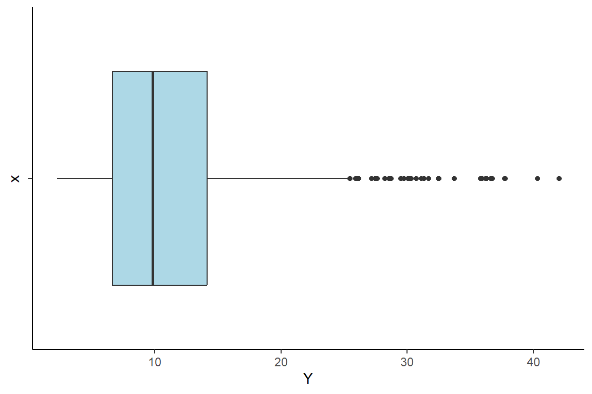
Eksplorasi Spasial
Membaca peta Indonesia
id.map <- st_read("data/shp/idn_admbnda_adm2_bps_20200401.shp")
#> Reading layer `idn_admbnda_adm2_bps_20200401' from data source
#> `C:\Users\anugraha\Documents\Materi_Orasi\book\data\shp\idn_admbnda_adm2_bps_20200401.shp'
#> using driver `ESRI Shapefile'
#> Simple feature collection with 522 features and 14 fields
#> Geometry type: MULTIPOLYGON
#> Dimension: XY
#> Bounding box: xmin: 95 ymin: -11 xmax: 141 ymax: 6.08
#> Geodetic CRS: WGS 84indonesia.map <- id.map
indonesia.map <- indonesia.map[c(-91,-92,-93,-94,-95,-127,-513,-514),]
indonesia.2 <- tigris::geo_join(spatial_data=indonesia.map, data_frame = imputasi, by_df = "ADM2_EN",by_sp ="ADM2_EN", how = "inner")
#> Warning in tigris::geo_join(spatial_data = indonesia.map,
#> data_frame = imputasi, : We recommend using the dplyr::*_join()
#> family of functions instead.Peta tematik tingkat kemiskinan di Indonesia
#Y = Tingkat kemiskinan (persen)
plot(indonesia.2["Y"],
main = "Tingkat Kemiskinan",
breaks = "quantile", nbreaks = 7,
pal = brewer.pal(7, "Blues"),
graticule = st_crs(4326))
Korelasi
Melihat korelasi antar peubah
Scatter plot
Membuat plot tebaran antara peubah respons dan peubah penjelas
tmp <- par(mfrow=c(2,4))
plot(data$X1 , data$Y, ylab = "penduduk miskin (%)", xlab = "X1")
plot(data$X2 , data$Y, ylab = "penduduk miskin (%)", xlab = "X2")
plot(data$X3 , data$Y, ylab = "penduduk miskin (%)", xlab = "X3")
plot(data$X4 , data$Y, ylab = "penduduk miskin (%)", xlab = "X4")
plot(data$X5 , data$Y, ylab = "penduduk miskin (%)", xlab = "X5")
plot(data$X6 , data$Y, ylab = "penduduk miskin (%)", xlab = "X6")
plot(data$X7 , data$Y, ylab = "penduduk miskin (%)", xlab = "X7")
plot(data$X8 , data$Y, ylab = "penduduk miskin (%)", xlab = "X8")
par(tmp)
Pengecekan asumsi galat
Membentuk regresi linear berganda terlebih dahulu
regresi.klasik <- lm(Y ~ X1 + X2 + X3 + X4 + X5 + X6 + X7 + X8, data = imputasi)
summary(regresi.klasik)
#>
#> Call:
#> lm(formula = Y ~ X1 + X2 + X3 + X4 + X5 + X6 + X7 + X8, data = imputasi)
#>
#> Residuals:
#> Min 1Q Median 3Q Max
#> -12.721 -2.954 -0.218 2.671 16.658
#>
#> Coefficients:
#> Estimate Std. Error t value Pr(>|t|)
#> (Intercept) 1.18e+02 7.87e+00 15.01 < 2e-16 ***
#> X1 1.23e+01 3.01e+00 4.10 4.9e-05 ***
#> X2 -2.67e-01 2.98e-02 -8.95 < 2e-16 ***
#> X3 -3.20e-02 1.19e-02 -2.68 0.0077 **
#> X4 -6.91e-02 5.10e-02 -1.36 0.1755
#> X5 -1.16e+00 8.22e-02 -14.11 < 2e-16 ***
#> X6 8.42e-02 1.07e-01 0.79 0.4305
#> X7 -9.91e-07 3.86e-07 -2.57 0.0105 *
#> X8 -1.36e-02 2.03e-02 -0.67 0.5020
#> ---
#> Signif. codes: 0 '***' 0.001 '**' 0.01 '*' 0.05 '.' 0.1 ' ' 1
#>
#> Residual standard error: 4.59 on 505 degrees of freedom
#> Multiple R-squared: 0.608, Adjusted R-squared: 0.602
#> F-statistic: 97.9 on 8 and 505 DF, p-value: <2e-16terdapat lima peubah yang signifikan.
Dilanjutkan menguji asumsi galat/sisaan yang terdiri dari uji normalitas, homoskedastisitas, dan autokorelasi
dwtest(regresi.klasik) #autokorelasi
#>
#> Durbin-Watson test
#>
#> data: regresi.klasik
#> DW = 1, p-value <2e-16
#> alternative hypothesis: true autocorrelation is greater than 0
bptest(regresi.klasik) #homoskedastisitas
#>
#> studentized Breusch-Pagan test
#>
#> data: regresi.klasik
#> BP = 99, df = 8, p-value <2e-16
shapiro.test(regresi.klasik$residuals) #normalitas
#>
#> Shapiro-Wilk normality test
#>
#> data: regresi.klasik$residuals
#> W = 1, p-value = 0.01Seluruh asumsi tidak terpenuhi karena p-value < 0.05
Deteksi multikolinearitas
Sebuah peubah penjelas dikatakan mengandung multikolinearitas ketika memiliki VIF di atas 5 (James et al., 2013)
vif(regresi.klasik) #Multikolinearitas
#> X1 X2 X3 X4 X5 X6 X7 X8
#> 1.13 3.32 2.11 2.49 6.80 1.46 1.31 1.84Terlihat peubah \(X_5\) (IPM) memiliki VIF > 5 sehingga dikeluarkan dari model
deteksi multikolinearitas tanpa peubah X5
regresi.klasik.2 <- lm(Y ~ X1 + X2 + X3 + X4 + X6 + X7 + X8, data = imputasi)
summary(regresi.klasik.2)
#>
#> Call:
#> lm(formula = Y ~ X1 + X2 + X3 + X4 + X6 + X7 + X8, data = imputasi)
#>
#> Residuals:
#> Min 1Q Median 3Q Max
#> -13.359 -3.550 -0.329 2.955 20.174
#>
#> Coefficients:
#> Estimate Std. Error t value Pr(>|t|)
#> (Intercept) 1.82e+01 4.06e+00 4.50 8.5e-06 ***
#> X1 7.47e+00 3.53e+00 2.12 0.035 *
#> X2 -1.55e-02 2.82e-02 -0.55 0.582
#> X3 -1.02e-01 1.28e-02 -8.00 8.5e-15 ***
#> X4 2.26e-01 5.48e-02 4.12 4.5e-05 ***
#> X6 -2.12e-01 1.23e-01 -1.72 0.087 .
#> X7 2.23e-07 4.44e-07 0.50 0.616
#> X8 -1.29e-01 2.19e-02 -5.88 7.6e-09 ***
#> ---
#> Signif. codes: 0 '***' 0.001 '**' 0.01 '*' 0.05 '.' 0.1 ' ' 1
#>
#> Residual standard error: 5.41 on 506 degrees of freedom
#> Multiple R-squared: 0.454, Adjusted R-squared: 0.446
#> F-statistic: 60 on 7 and 506 DF, p-value: <2e-16terdapat empat peubah penjelas yang signifikan
vif(regresi.klasik.2)
#> X1 X2 X3 X4 X6 X7 X8
#> 1.11 2.13 1.74 2.07 1.41 1.25 1.54sudah tidak ada peubah dengan nilai VIF > 5 sehingga aman dari multikolinearitas
Asumsi efek spasial
Heteroskedastisitas spasial
Menggunakan uji Breusch-Pagan untuk mengecek heteroskedastisitas spasial dengan hipotesis
\(H_0\): Tidak terdapat heteroskedastisitas spasial \(H_1\): Terdapat heteroskedastisitas spasial
#heteroskedastisitas spasial
bptest(regresi.klasik.2)
#>
#> studentized Breusch-Pagan test
#>
#> data: regresi.klasik.2
#> BP = 118, df = 7, p-value <2e-16Tolak \(H_0\) sehingga dapat dikatakan terdapat heteroskedastisitas spasial
Autokorelasi spasial
Menggunakan uji Moran untuk mengecek autokorelasi spasial dengan hipotesis
\(H_0\): tidak terdapat autokorelasi spasial \(H_1\): terdapat autokorelasi spasial
digunakan beragam pembobot spasial untuk mendapatkan nilai indeks Moran membentuk matrik jarak
KNN
K-Nearest Neighbor Weight (k = 5)
W.knn <- knn2nb(knearneigh(koordinat,k=5,longlat=TRUE))
#> Warning in knn2nb(knearneigh(koordinat, k = 5, longlat = TRUE)):
#> neighbour object has 3 sub-graphsW.knn1 <- nb2listw(W.knn, style = 'W')Invers Distance Weight
alpha1 = 1
W.idw <- 1/(DD^alpha1)
diag(W.idw) <- 0
rtot <- rowSums(W.idw, na.rm = TRUE)
W.idw.sd <- W.idw/rtot
W.idw.1 = mat2listw(W.idw.sd,style = 'W')
alpha2 = 2
W.idw2 = 1/(DD^alpha2)
diag(W.idw2) <- 0
rtot <- rowSums(W.idw2,na.rm=TRUE)
W.idw.sd2 <- W.idw2/rtot
W.idw.22 = mat2listw(W.idw.sd2,style='W')Eksponensial Distance Weight
Rook Contiguity
sf_use_s2(FALSE)
#> Spherical geometry (s2) switched off
W.rook <- poly2nb(as(indonesia.map, "Spatial"),queen = F)
#> although coordinates are longitude/latitude, st_intersects assumes
#> that they are planar
#> Warning in poly2nb(as(indonesia.map, "Spatial"), queen = F): some observations have no neighbours;
#> if this seems unexpected, try increasing the snap argument.
#> Warning in poly2nb(as(indonesia.map, "Spatial"), queen = F): neighbour object has 52 sub-graphs;
#> if this sub-graph count seems unexpected, try increasing the snap argument.
W.rook.s <- nb2listw(W.rook,style='W', zero.policy = TRUE)Queen Contiguity
sf_use_s2(FALSE)
W.queen <- poly2nb(as(indonesia.map, "Spatial"),queen = T)
#> although coordinates are longitude/latitude, st_intersects assumes
#> that they are planar
#> Warning in poly2nb(as(indonesia.map, "Spatial"), queen = T): some observations have no neighbours;
#> if this seems unexpected, try increasing the snap argument.
#> Warning in poly2nb(as(indonesia.map, "Spatial"), queen = T): neighbour object has 52 sub-graphs;
#> if this sub-graph count seems unexpected, try increasing the snap argument.
W.queen.s <- nb2listw(W.queen,style='W', zero.policy =TRUE)Pemilihan matriks bobot
MI.knn <- moran(imputasi$Y, W.knn1, n=length(W.knn1$neighbours), S0=Szero(W.knn1))
MI.power1 <-moran(imputasi$Y,W.idw.1, n =length(W.idw.1$neighbours), S0=Szero(W.idw.1))
MI.power2 <- moran(imputasi$Y, W.idw.22, n=length(W.idw.22$neighbours),S0=Szero(W.idw.22))
MI.exp1 <- moran(imputasi$Y, W.ed1, n=length(W.ed1$neighbours), S0=Szero(W.ed1))
MI.rook <- moran.test(imputasi$Y, W.rook.s, randomisation=TRUE, zero.policy = TRUE)
MI.queen <- moran.test(imputasi$Y, W.queen.s,randomisation = TRUE, zero.policy = TRUE)moranindeks<-data.frame(
"Matriks Bobot"=c("KNN (k=5)", "Power distance weight (alpha=1)", "Power distance weight (alpha=2)", "Exponential distance weight (alpha=1)", "Rook Contiguity", "Queen Contiguity"),
"Nilai Indeks Moran"=c(MI.knn$I, MI.power1$I, MI.power2$I, MI.exp1$I, 0.087286515, 0.085003993))
moranindeks
#> Matriks.Bobot Nilai.Indeks.Moran
#> 1 KNN (k=5) 0.7509
#> 2 Power distance weight (alpha=1) 0.2755
#> 3 Power distance weight (alpha=2) 0.6419
#> 4 Exponential distance weight (alpha=1) 0.6066
#> 5 Rook Contiguity 0.0873
#> 6 Queen Contiguity 0.0850Matrik bobot yang menghasilkan nilai Indeks Moran terbesar adalah matriks bobot KNN (k = 5)
#Autokorelasi spasial
Woptimum <- W.knn1
moran.test(imputasi$Y,Woptimum, randomisation=TRUE, zero.policy = TRUE)
#>
#> Moran I test under randomisation
#>
#> data: imputasi$Y
#> weights: Woptimum
#>
#> Moran I statistic standard deviate = 29, p-value <2e-16
#> alternative hypothesis: greater
#> sample estimates:
#> Moran I statistic Expectation Variance
#> 0.75091 -0.00195 0.00068Tolak \(H_0\) sehingga dapat dikatakan terdapat autokorelasi spasial.
Matriks pembobot spasial
Karena syarat adanya efek spasial terpenuhi maka dapat dilanjutkan analisis menggunakan Regresi Gerombol Spasial. Pertama-tama perlu mendefinisikan matriks pembobot spasial dalam studi kasus ini menggunakan 9 kombinasi pembobot spasial sebagai berikut:
Pembentukan pembobot 1 (1 atau 0) Jarak Ambang
koordinat <- imputasi[,c(16,17)]
batas <- knn2nb(knearneigh(koordinat))
#> Warning in knn2nb(knearneigh(koordinat)): neighbour object has 149
#> sub-graphs
batas.maks <- unlist(nbdists(batas, koordinat, longlat = F))
summary(batas.maks)
#> Min. 1st Qu. Median Mean 3rd Qu. Max.
#> 0.004 0.224 0.312 0.404 0.503 2.641batas dmaks agar seluruh amatan setidaknya memiliki satu tetangga ialah 2,65 km
Pembentukan pembobot 2 (eksponensial)
Pembentukan pembobot 3 (KNN) k = 3
Pembentukan pembobot 4 (KNN) k = 4
Pembentukan pembobot 5 (KNN) k = 5
Pembentukan pembobot 6 (Invers Distance Weight)
Pembentukan pembobot 7 (Invers Distance Weight: Alpha 2)
Pembentukan Pembobot 8 (Queen Contiguity)
sf_use_s2(FALSE)
queen.w <- poly2nb(as(indonesia.map, "Spatial"),queen = T)
#> although coordinates are longitude/latitude, st_intersects assumes
#> that they are planar
#> Warning in poly2nb(as(indonesia.map, "Spatial"), queen = T): some observations have no neighbours;
#> if this seems unexpected, try increasing the snap argument.
#> Warning in poly2nb(as(indonesia.map, "Spatial"), queen = T): neighbour object has 52 sub-graphs;
#> if this sub-graph count seems unexpected, try increasing the snap argument.
summary(queen.w)
#> Neighbour list object:
#> Number of regions: 514
#> Number of nonzero links: 1990
#> Percentage nonzero weights: 0.753
#> Average number of links: 3.87
#> 32 regions with no links:
#> 13, 21, 22, 146, 156, 157, 158, 159, 160, 161, 162, 163,
#> 164, 165, 174, 186, 248, 267, 271, 274, 303, 323, 325, 326,
#> 367, 418, 419, 430, 431, 447, 454, 516
#> 52 disjoint connected subgraphs
#> Link number distribution:
#>
#> 0 1 2 3 4 5 6 7 8 9 10 11
#> 32 56 64 74 88 70 66 40 15 6 1 2
#> 56 least connected regions:
#> 24 25 27 45 46 55 57 80 81 107 177 179 191 193 194 195 197 198 200 211 213 216 218 221 223 225 226 228 230 231 239 240 241 244 247 249 250 253 254 257 259 265 266 269 273 305 335 359 425 441 442 470 472 474 476 477 with 1 link
#> 2 most connected regions:
#> 62 355 with 11 links#Untuk melihat bentuk matriks bobot
queen.w1<-nb2mat(queen.w,style = "B", zero.policy = TRUE)
W8 <- queen.w1Pembentukan Pembobot 9 (Rook Contiguity)
sf_use_s2(FALSE)
rook.w <- poly2nb(as(indonesia.map, "Spatial"),queen = F)
#> although coordinates are longitude/latitude, st_intersects assumes
#> that they are planar
#> Warning in poly2nb(as(indonesia.map, "Spatial"), queen = F): some observations have no neighbours;
#> if this seems unexpected, try increasing the snap argument.
#> Warning in poly2nb(as(indonesia.map, "Spatial"), queen = F): neighbour object has 52 sub-graphs;
#> if this sub-graph count seems unexpected, try increasing the snap argument.
summary(rook.w)
#> Neighbour list object:
#> Number of regions: 514
#> Number of nonzero links: 1978
#> Percentage nonzero weights: 0.749
#> Average number of links: 3.85
#> 32 regions with no links:
#> 13, 21, 22, 146, 156, 157, 158, 159, 160, 161, 162, 163,
#> 164, 165, 174, 186, 248, 267, 271, 274, 303, 323, 325, 326,
#> 367, 418, 419, 430, 431, 447, 454, 516
#> 52 disjoint connected subgraphs
#> Link number distribution:
#>
#> 0 1 2 3 4 5 6 7 8 9 10 11
#> 32 56 65 73 91 69 66 40 15 4 1 2
#> 56 least connected regions:
#> 24 25 27 45 46 55 57 80 81 107 177 179 191 193 194 195 197 198 200 211 213 216 218 221 223 225 226 228 230 231 239 240 241 244 247 249 250 253 254 257 259 265 266 269 273 305 335 359 425 441 442 470 472 474 476 477 with 1 link
#> 2 most connected regions:
#> 62 355 with 11 links#Untuk melihat bentuk matriks bobot
rook.w1<-nb2mat(rook.w,style = "B", zero.policy = TRUE)
W9 <- rook.w1Gerombol K-Means (inisiasi awal)
Gerombol inisiasi awal menggunakan metode K-means di mana data yang digunakan untuk penggerombolan tak berhierarki adalah data koordinat (longitude dan latitude) atau data jarak antara satu lokasi amatan dengan lokasi amatan lainnya
table(G3$cluster)
#>
#> 1 2 3
#> 236 88 190
table(G4$cluster)
#>
#> 1 2 3 4
#> 193 133 48 140
table(G5$cluster)
#>
#> 1 2 3 4 5
#> 122 131 48 57 156
table(G6$cluster)
#>
#> 1 2 3 4 5 6
#> 89 102 46 106 42 129
table(G7$cluster)
#>
#> 1 2 3 4 5 6 7
#> 61 48 75 57 84 115 74
table(G8$cluster)
#>
#> 1 2 3 4 5 6 7 8
#> 43 23 88 46 93 104 50 67
table(G9$cluster)
#>
#> 1 2 3 4 5 6 7 8 9
#> 60 70 71 46 45 75 63 57 27
table(G10$cluster)
#>
#> 1 2 3 4 5 6 7 8 9 10
#> 54 53 79 60 44 57 51 26 51 39
table(G11$cluster)
#>
#> 1 2 3 4 5 6 7 8 9 10 11
#> 38 42 48 24 56 19 78 48 51 64 46
table(G12$cluster)
#>
#> 1 2 3 4 5 6 7 8 9 10 11 12
#> 23 78 49 56 40 65 22 48 38 19 48 28
table(G13$cluster)
#>
#> 1 2 3 4 5 6 7 8 9 10 11 12 13
#> 39 23 63 71 37 28 60 22 70 18 20 27 36
table(G14$cluster)
#>
#> 1 2 3 4 5 6 7 8 9 10 11 12 13 14
#> 50 47 59 52 16 25 15 38 31 48 22 19 55 37
table(G15$cluster)
#>
#> 1 2 3 4 5 6 7 8 9 10 11 12 13 14 15
#> 9 24 22 48 33 39 42 60 28 47 29 35 46 22 30gerombol.kmeans <- imputasi[,c(1,2,3,16,17)]
gerombol.kmeans <- gerombol.kmeans %>% mutate(G3 = G3$cluster)
gerombol.kmeans <- gerombol.kmeans %>% mutate(G4 = G4$cluster)
gerombol.kmeans <- gerombol.kmeans %>% mutate(G5 = G5$cluster)
gerombol.kmeans <- gerombol.kmeans %>% mutate(G6 = G6$cluster)
gerombol.kmeans <- gerombol.kmeans %>% mutate(G7 = G7$cluster)
gerombol.kmeans <- gerombol.kmeans %>% mutate(G8 = G8$cluster)
gerombol.kmeans <- gerombol.kmeans %>% mutate(G9 = G9$cluster)
gerombol.kmeans <- gerombol.kmeans %>% mutate(G10 = G10$cluster)
gerombol.kmeans <- gerombol.kmeans %>% mutate(G11 = G11$cluster)
gerombol.kmeans <- gerombol.kmeans %>% mutate(G12 = G12$cluster)
gerombol.kmeans <- gerombol.kmeans %>% mutate(G13 = G13$cluster)
gerombol.kmeans <- gerombol.kmeans %>% mutate(G14 = G14$cluster)
gerombol.kmeans <- gerombol.kmeans %>% mutate(G15 = G15$cluster)Peta Kluster K-Means
indonesia.map <- id.map
indonesia.map <- indonesia.map[c(-91,-92,-93,-94,-95,-127,-513,-514),]
indonesia.kmeans <- tigris::geo_join(spatial_data=indonesia.map, data_frame = gerombol.kmeans, by_df = "ADM2_EN",by_sp ="ADM2_EN", how = "inner")
#> Warning in tigris::geo_join(spatial_data = indonesia.map,
#> data_frame = gerombol.kmeans, : We recommend using the
#> dplyr::*_join() family of functions instead.menas3 <- ggplot() +
geom_sf(data = indonesia.kmeans, aes(fill = as.factor(G3))) +
labs(title = "K-Means 3",
fill = "Cluster") +
theme_bw()
menas3
Peta G = 3
menas4 <- ggplot() +
geom_sf(data = indonesia.kmeans, aes(fill = as.factor(G4))) +
labs(title = "K-Means 4",
fill = "Cluster") +
theme_bw()
menas4
Peta G = 4
menas5 <- ggplot() +
geom_sf(data = indonesia.kmeans, aes(fill = as.factor(G5))) +
labs(title = "K-Means 5",
fill = "Cluster") +
theme_bw()
menas5
Peta G = 5
menas6 <- ggplot() +
geom_sf(data = indonesia.kmeans, aes(fill = as.factor(G6))) +
labs(title = "K-Means 6",
fill = "Cluster") +
theme_bw()
menas6
Peta G = 6
menas7 <- ggplot() +
geom_sf(data = indonesia.kmeans, aes(fill = as.factor(G7))) +
labs(title = "K-Means 7",
fill = "Cluster") +
theme_bw()
menas7
Peta G = 7
menas8 <- ggplot() +
geom_sf(data = indonesia.kmeans, aes(fill = as.factor(G8))) +
labs(title = "K-Means 8",
fill = "Cluster") +
theme_bw()
menas8
Peta G = 8
menas9 <- ggplot() +
geom_sf(data = indonesia.kmeans, aes(fill = as.factor(G9))) +
labs(title = "K-Means 9",
fill = "Cluster") +
theme_bw()
menas9
Peta G = 9
menas10 <- ggplot() +
geom_sf(data = indonesia.kmeans, aes(fill = as.factor(G10))) +
labs(title = "K-Means 10",
fill = "Cluster") +
theme_bw()
menas10
Peta G = 10
menas11 <- ggplot() +
geom_sf(data = indonesia.kmeans, aes(fill = as.factor(G11))) +
labs(title = "K-Means 11",
fill = "Cluster") +
theme_bw()
menas11
Peta G = 11
menas12 <- ggplot() +
geom_sf(data = indonesia.kmeans, aes(fill = as.factor(G12))) +
labs(title = "K-Means 12",
fill = "Cluster") +
theme_bw()
menas12
Peta G = 12
menas13 <- ggplot() +
geom_sf(data = indonesia.kmeans, aes(fill = as.factor(G13))) +
labs(title = "K-Means 13",
fill = "Cluster") +
theme_bw()
menas13
Peta G = 13
menas14 <- ggplot() +
geom_sf(data = indonesia.kmeans, aes(fill = as.factor(G14))) +
labs(title = "K-Means 14",
fill = "Cluster") +
theme_bw()
menas14
Peta G = 14
menas15 <- ggplot() +
geom_sf(data = indonesia.kmeans, aes(fill = as.factor(G15))) +
labs(title = "K-Means 15",
fill = "Cluster") +
theme_bw()
menas15
Peta G = 15
Model Regresi Gerombol Spasial dengan Peubah Y
Gerombol dengan pembobot 1
## SCR: spatially clustered regression
set.seed(1)
Y <- imputasi$Y
X <- as.matrix(cbind(imputasi$X1,imputasi$X2,imputasi$X3,imputasi$X4,
imputasi$X6,imputasi$X7,imputasi$X8))
G.set <- seq(3, 15, by=1)
Y.IC.1 <- SCR.select(Y, X, W1, Sp, G.set=G.set, Phi=1, print=F, family="gaussian")
Y.hG.1 <- Y.IC.1$G # optimal number of group via BIC
Y.hG.1
#> [1] 4Gerombol optimum = 4
Gerombol dengan pembobot 2
## SCR: spatially clustered regression
set.seed(1)
Y <- imputasi$Y
X <- as.matrix(cbind(imputasi$X1,imputasi$X2,imputasi$X3,imputasi$X4,
imputasi$X6,imputasi$X7,imputasi$X8))
G.set <- seq(3, 30, by=1)
Y.IC.2 <- SCR.select(Y, X, W2, Sp, G.set=G.set, Phi=1, print=F, family="gaussian")
Y.hG.2 <- Y.IC.2$G # optimal number of group via BIC
Y.hG.2
#> [1] 3Gerombol optimum = 3
Gerombol dengan pembobot 3
## SCR: spatially clustered regression
set.seed(1)
Y <- imputasi$Y
X <- as.matrix(cbind(imputasi$X1,imputasi$X2,imputasi$X3,imputasi$X4,
imputasi$X6,imputasi$X7,imputasi$X8))
G.set <- seq(3, 30, by=1)
Y.IC.3 <- SCR.select(Y, X, W3, Sp, G.set=G.set, Phi=1, print=F, family="gaussian")
Y.hG.3 <- Y.IC.3$G # optimal number of group via BIC
Y.hG.3
#> [1] 22Gerombol optimum = 22
Gerombol dengan pembobot 4
## SCR: spatially clustered regression
set.seed(1)
Y <- imputasi$Y
X <- as.matrix(cbind(imputasi$X1,imputasi$X2,imputasi$X3,imputasi$X4,
imputasi$X6,imputasi$X7,imputasi$X8))
G.set <- seq(3, 30, by=1)
Y.IC.4 <- SCR.select(Y, X, W4, Sp, G.set=G.set, Phi=1, print=F, family="gaussian")
Y.hG.4 <- Y.IC.4$G # optimal number of group via BIC
Y.hG.4
#> [1] 7Gerombol optimum = 7
Gerombol dengan pembobot 5
## SCR: spatially clustered regression
set.seed(1)
Y <- imputasi$Y
X <- as.matrix(cbind(imputasi$X1,imputasi$X2,imputasi$X3,imputasi$X4,
imputasi$X6,imputasi$X7,imputasi$X8))
G.set <- seq(3, 30, by=1)
Y.IC.5 <- SCR.select(Y, X, W5, Sp, G.set=G.set, Phi=1, print=F, family="gaussian")
Y.hG.5 <- Y.IC.5$G # optimal number of group via BIC
Y.hG.5
#> [1] 6Gerombol optimum = 6
Gerombol dengan pembobot 6
## SCR: spatially clustered regression
set.seed(1)
Y <- imputasi$Y
X <- as.matrix(cbind(imputasi$X1,imputasi$X2,imputasi$X3,imputasi$X4,
imputasi$X6,imputasi$X7,imputasi$X8))
G.set <- seq(3, 30, by=1)
Y.IC.6 <- SCR.select(Y, X, W6, Sp, G.set=G.set, Phi=1, print=F, family="gaussian")
Y.hG.6 <- Y.IC.6$G # optimal number of group via BIC
Y.hG.6
#> [1] 5Gerombol optimum = 5
Gerombol dengan pembobot 7
## SCR: spatially clustered regression
set.seed(1)
Y <- imputasi$Y
X <- as.matrix(cbind(imputasi$X1,imputasi$X2,imputasi$X3,imputasi$X4,
imputasi$X6,imputasi$X7,imputasi$X8))
G.set <- seq(3, 30, by=1)
Y.IC.7 <- SCR.select(Y, X, W7, Sp, G.set=G.set, Phi=1, print=F, family="gaussian")
Y.hG.7 <- Y.IC.7$G # optimal number of group via BIC
Y.hG.7
#> [1] 4Gerombol optimum = 4
Gerombol dengan pembobot 8
## SCR: spatially clustered regression
df <- imputasi[order(imputasi$ADM2_EN),]
koordinat.2 <- df[,c(16,17)]
Sp.2 <- as.matrix(koordinat.2)
Y <- df$Y
X <- as.matrix(cbind(df$X1,df$X2,df$X3,df$X4,
df$X6,df$X7,df$X8))
G.set <- seq(3, 15, by=1)
Y.IC.8 <- SCR.select(Y, X, W8, Sp.2, G.set=G.set, Phi=1, print=F, family="gaussian")
Y.hG.8 <- Y.IC.8$G # optimal number of group via BIC
Y.hG.8
#> [1] 13Gerombol optimum = 13
Gerombol dengan pembobot 9
## SCR: spatially clustered regression
df <- imputasi[order(imputasi$ADM2_EN),]
koordinat.2 <- df[,c(16,17)]
Sp.2 <- as.matrix(koordinat.2)
Y <- df$Y
X <- as.matrix(cbind(df$X1,df$X2,df$X3,df$X4,
df$X6,df$X7,df$X8))
G.set <- seq(3, 15, by=1)
Y.IC.9 <- SCR.select(Y, X, W9, Sp.2, G.set=G.set, Phi=1, print=F, family="gaussian")
Y.hG.9 <- Y.IC.9$G # optimal number of group via BIC
Y.hG.9
#> [1] 12Gerombol optimum = 12
Peta Gerombol Spasial
Berikut hasil peta 9 model Regresi Gerombol Spasial
indonesia.map <- id.map
indonesia.map <- indonesia.map[c(-91,-92,-93,-94,-95,-127,-513,-514),]
indonesia.2 <- tigris::geo_join(spatial_data=indonesia.map, data_frame = data.gerombol.spasial, by_df = "ADM2_EN",by_sp ="ADM2_EN", how = "inner")
#> Warning in tigris::geo_join(spatial_data = indonesia.map,
#> data_frame = data.gerombol.spasial, : We recommend using the
#> dplyr::*_join() family of functions instead.Y pembobot 1
Y.pembobot1 <- ggplot() +
geom_sf(data = indonesia.2, aes(fill = as.factor(Y.pembobot1))) +
labs(title = "Y pembobot 1",
fill = "Cluster") +
theme_bw()
Y.pembobot1Peta Regresi Gerombol Spasial pembobot jarak ambang
Y pembobot 2
Y.pembobot2 <- ggplot() +
geom_sf(data = indonesia.2, aes(fill = as.factor(Y.pembobot2))) +
labs(title = "Y pembobot 2",
fill = "Cluster") +
theme_bw()
Y.pembobot2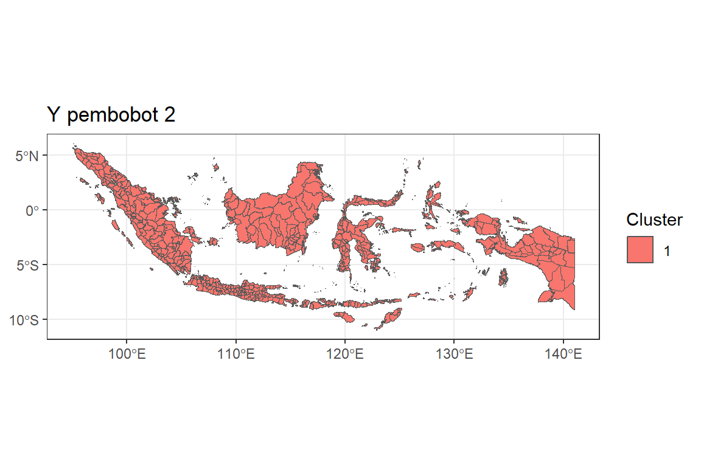
Peta Regresi Gerombol Spasial pembobot eksponensial
Y pembobot 3
Y.pembobot3 <- ggplot() +
geom_sf(data = indonesia.2, aes(fill = as.factor(Y.pembobot3))) +
labs(title = "Y pembobot 3",
fill = "Cluster") +
theme_bw()
Y.pembobot3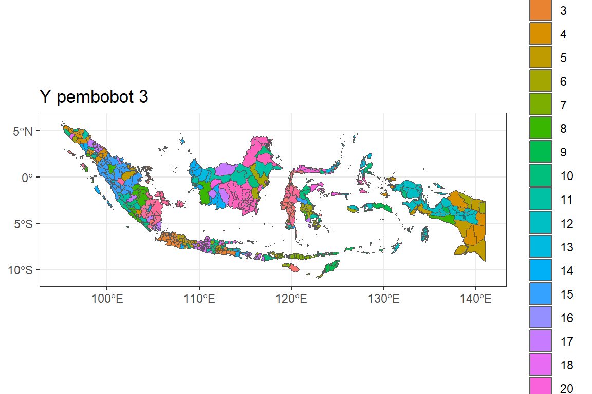
Peta Regresi Pembobot Spasial pembobot KNN (k = 3)
Y pembobot 4
Y.pembobot4 <- ggplot() +
geom_sf(data = indonesia.2, aes(fill = as.factor(Y.pembobot4))) +
labs(title = "Y pembobot 4",
fill = "Cluster") +
theme_bw()
Y.pembobot4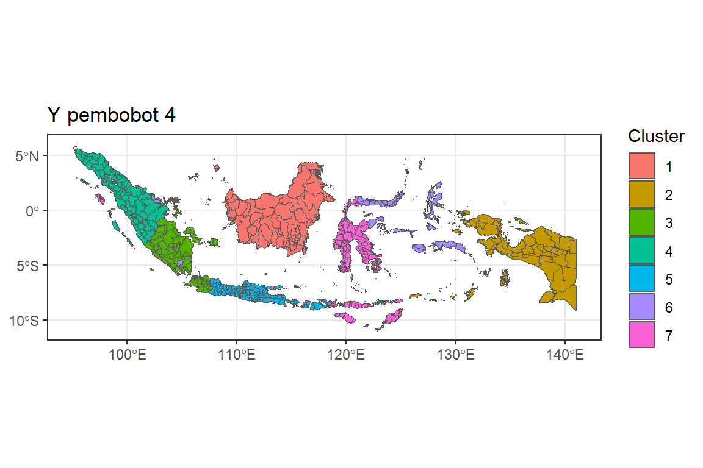
Peta Regresi Gerombol Spasial pembobot KNN (k = 4)
Y pembobot 5
Y.pembobot5 <- ggplot() +
geom_sf(data = indonesia.2, aes(fill = as.factor(Y.pembobot5))) +
labs(title = "Y pembobot 5",
fill = "Cluster") +
theme_bw()
Y.pembobot5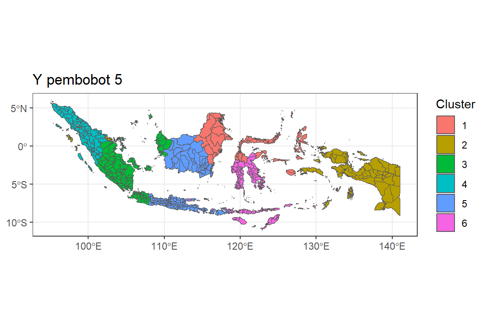
Peta Regresi Gerombol Spasial KNN (k = 5)
Y pembobot 6
Y.pembobot6 <- ggplot() +
geom_sf(data = indonesia.2, aes(fill = as.factor(Y.pembobot6))) +
labs(title = "Y pembobot 6",
fill = "Cluster") +
theme_bw()
Y.pembobot6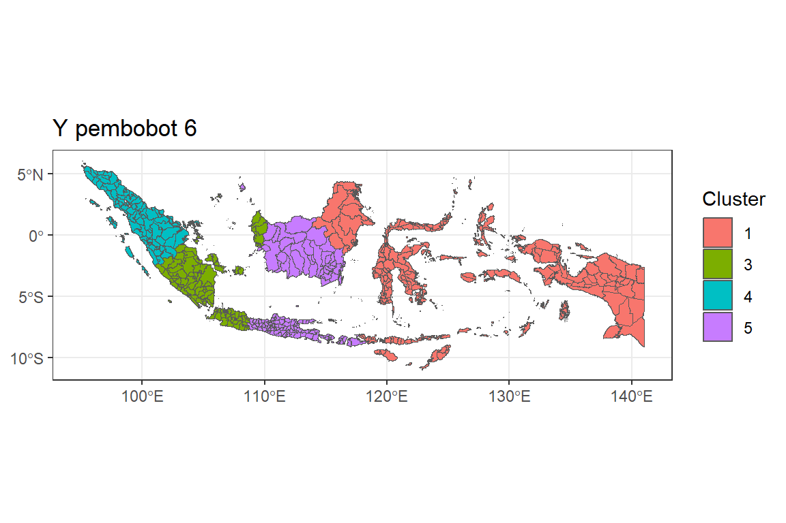
Peta Regresi Gerombol Spasial pembobot jarak invers (alpha = 1)
Y pembobot 7
Y.pembobot7 <- ggplot() +
geom_sf(data = indonesia.2, aes(fill = as.factor(Y.pembobot7))) +
labs(title = "Y pembobot 7",
fill = "Cluster") +
theme_bw()
Y.pembobot7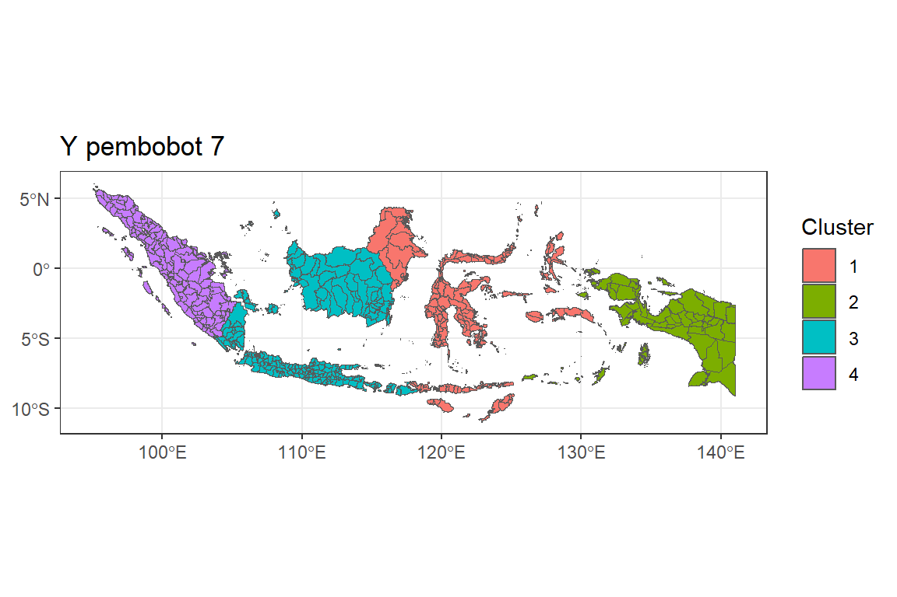
Peta Regresi Gerombol Spasial pembobot jarak invers (alpha = 2)
Y pembobot 8
indonesia.3 <- tigris::geo_join(spatial_data=indonesia.map, data_frame = data.gerombol.spasial.2, by_df = "ADM2_EN",by_sp ="ADM2_EN", how = "inner")
#> Warning in tigris::geo_join(spatial_data = indonesia.map,
#> data_frame = data.gerombol.spasial.2, : We recommend using the
#> dplyr::*_join() family of functions instead.Y.pembobot8 <- ggplot() +
geom_sf(data = indonesia.3, aes(fill = as.factor(Y.pembobot8))) +
labs(title = "Y pembobot 8",
fill = "Cluster") +
theme_bw()
Y.pembobot8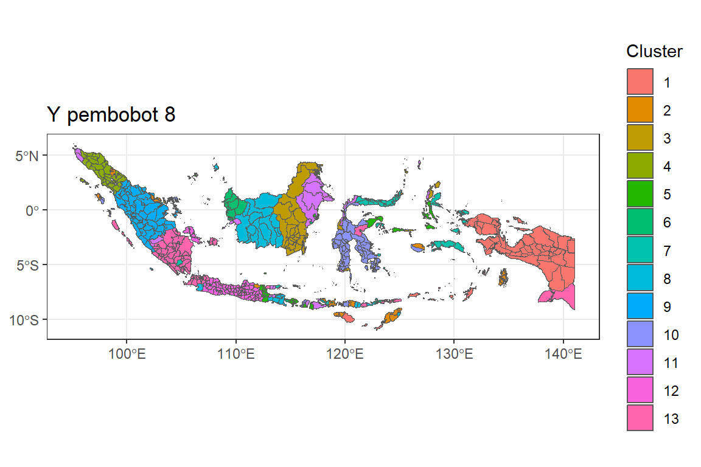
Peta Regresi Gerombol Spasial pembobot queen contiguity
Y pembobot 9
Y.pembobot9 <- ggplot() +
geom_sf(data = indonesia.3, aes(fill = as.factor(Y.pembobot9))) +
labs(title = "Y pembobot 9",
fill = "Cluster") +
theme_bw()
Y.pembobot9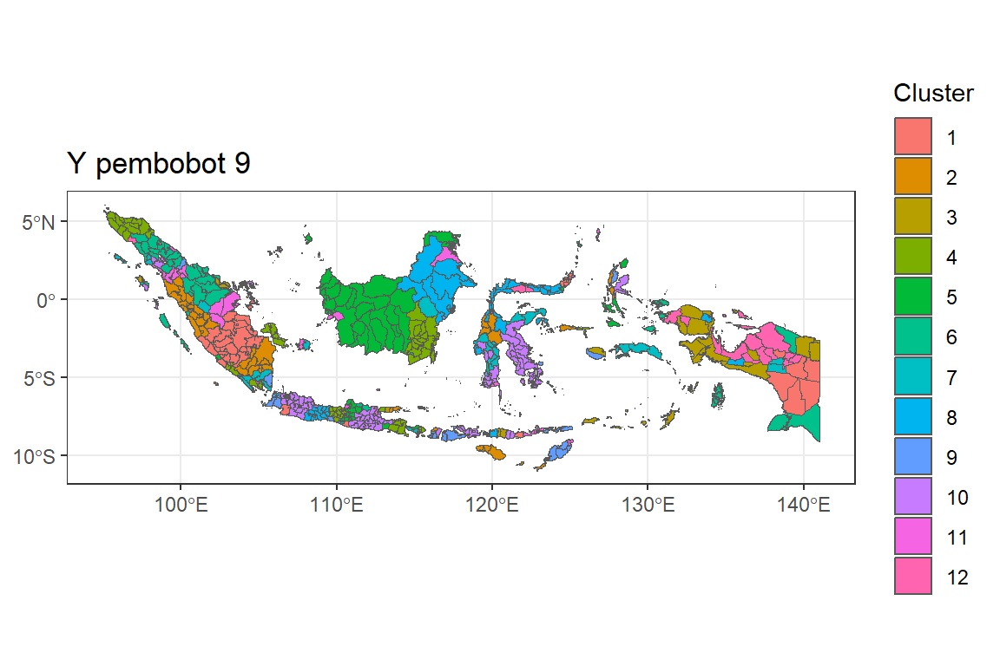
Peta Regresi Gerombol Spasial rook contiguity
Nilai uji kebaikan model
MAE
MAE.1 <- mean(abs(fit1$sSig))
MAE.2 <- mean(abs(fit2$sSig))
MAE.3 <- mean(abs(fit3$sSig))
MAE.4 <- mean(abs(fit4$sSig))
MAE.5 <- mean(abs(fit5$sSig))
MAE.6 <- mean(abs(fit6$sSig))
MAE.7 <- mean(abs(fit7$sSig))
MAE.8 <- mean(abs(fit8$sSig))
MAE.9 <- mean(abs(fit9$sSig))
MAE <- c(MAE.1, MAE.2, MAE.3, MAE.4, MAE.5, MAE.6, MAE.7, MAE.8, MAE.9)MAPE
MAPE.1 <- mean(abs(fit1$sSig/imputasi$Y)) * 100
MAPE.2 <- mean(abs(fit2$sSig/imputasi$Y)) * 100
MAPE.3 <- mean(abs(fit3$sSig/imputasi$Y)) * 100
MAPE.4 <- mean(abs(fit4$sSig/imputasi$Y)) * 100
MAPE.5 <- mean(abs(fit5$sSig/imputasi$Y)) * 100
MAPE.6 <- mean(abs(fit6$sSig/imputasi$Y)) * 100
MAPE.7 <- mean(abs(fit7$sSig/imputasi$Y)) * 100
MAPE.8 <- mean(abs(fit8$sSig/imputasi$Y)) * 100
MAPE.9 <- mean(abs(fit9$sSig/imputasi$Y)) * 100
MAPE <- c(MAPE.1, MAPE.2, MAPE.3, MAPE.4, MAPE.5, MAPE.6, MAPE.7, MAPE.8, MAPE.9)RMSE
RMSE.1 <- sqrt(mean(fit1$sSig^2))
RMSE.2 <- sqrt(mean(fit2$sSig^2))
RMSE.3 <- sqrt(mean(fit3$sSig^2))
RMSE.4 <- sqrt(mean(fit4$sSig^2))
RMSE.5 <- sqrt(mean(fit5$sSig^2))
RMSE.6 <- sqrt(mean(fit6$sSig^2))
RMSE.7 <- sqrt(mean(fit7$sSig^2))
RMSE.8 <- sqrt(mean(fit8$sSig^2))
RMSE.9 <- sqrt(mean(fit9$sSig^2))
RMSE <- c(RMSE.1, RMSE.2, RMSE.3, RMSE.4, RMSE.5, RMSE.6, RMSE.7, RMSE.8, RMSE.9)Model <- c("Model 1", "Model 2", "Model 3", "Model 4", "Model 5", "Model 6", "Model 7", "Model 8", "Model 9")
df.model <- data.frame(Model, MAE, MAPE, RMSE)
knitr::kable(df.model, digits = 2, "simple")| Model | MAE | MAPE | RMSE |
|---|---|---|---|
| Model 1 | 3.45 | 39.98 | 3.47 |
| Model 2 | 5.37 | 63.82 | 5.37 |
| Model 3 | 0.72 | 7.87 | 0.83 |
| Model 4 | 2.80 | 31.01 | 2.89 |
| Model 5 | 3.06 | 34.31 | 3.14 |
| Model 6 | 4.03 | 45.15 | 4.24 |
| Model 7 | 3.46 | 40.11 | 3.48 |
| Model 8 | 1.60 | 18.69 | 1.84 |
| Model 9 | 1.28 | 15.22 | 1.40 |
Berdasarkan information criterion, uji kebaikan model, dan pola gerombol peta dipilih model 4 dengan gerombol optimum 7 dan pembobot 4-tetangga terdekat sebagai model terbaik
ANOVA
Hasil boxplot menunjukkan bahwa terdapat perbedaan antara gerombol spasial satu dengan gerombol spasial yang lain.
data.gerombol.spasial$Y.pembobot4 <- as.factor(data.gerombol.spasial$Y.pembobot4)
boxplot(Y ~ Y.pembobot4, data = data.gerombol.spasial,
col = c("white", "steelblue"))
Setelah didapatkan model terbaik, kemudian dilakukan analisis sidik ragam untuk mengetahui apakah terdapat perbedaan antar gerombol terhadap tingkat kemiskinan dengan hipotesis sebagai berikut:
\(H_0\): tingkat kemiskinan antar gerombol sama \(H_1\): tingkat kemiskinan antar gerombol berbeda
buat.anova <- data.gerombol.spasial
buat.anova$Y.pembobot4 <- as.factor(buat.anova$Y.pembobot4)
aov_ral <- aov(Y ~ Y.pembobot4, data = buat.anova)
summary(aov_ral)
#> Df Sum Sq Mean Sq F value Pr(>F)
#> Y.pembobot4 6 14316 2386 94.3 <2e-16 ***
#> Residuals 507 12828 25
#> ---
#> Signif. codes: 0 '***' 0.001 '**' 0.01 '*' 0.05 '.' 0.1 ' ' 1Tabel ANOVA menunjukkan p-value < 0.05 sehingga tolak \(H_0\) atau dapat dikatakan bahwa tingkat kemiskinan antar gerombol berbeda. Berikut rataan tiap peubah untuk setiap gerombol spasial:
library(data.table)
#>
#> Attaching package: 'data.table'
#> The following object is masked from 'package:raster':
#>
#> shift
#> The following objects are masked from 'package:dplyr':
#>
#> between, first, last
#> The following objects are masked from 'package:zoo':
#>
#> yearmon, yearqtr
rata.2 <- buat.anova
peubahlain <- data.gerombol.spasial
setDT(rata.2)
setDT(peubahlain)
rata.2[ ,list(mean=mean(Y)), by=Y.pembobot4]
#> Y.pembobot4 mean
#> <fctr> <num>
#> 1: 4 9.39
#> 2: 7 14.35
#> 3: 6 10.84
#> 4: 3 9.28
#> 5: 1 6.04
#> 6: 5 10.10
#> 7: 2 26.72Rataan peubah \(Y\)
Rataan peubah \(X_1\)
Rataan peubah \(X_2\)
Rataan peubah \(X_3\)
Rataan peubah \(X_4\)
Rataan peubah \(X_6\)
Rataan peubah \(X_7\)
Rataan peubah \(X_8\)
Uji lanjut (Tukey)
Sudah diketahui melalui ANOVA bahwa terdapat perbedaan tingkat kemiskinan antar gerombol. Pertanyaannya gerombol mana yang berbeda? Oleh karena itu dilakukan uji lanjut menggunakan uji Tukey untuk mengecek perbedaan tingkat kemiskinan di setiap gerombolnya sehingga dikethaui mana gerombol dengan tingkat kemiskinan sama dan gerombol dengan tingkat kemiskinan berbeda.
tukey.gerombol <- TukeyHSD(aov_ral, 'Y.pembobot4', conf.level = 0.95)
tukey.gerombol$Y.pembobot4
#> diff lwr upr p adj
#> 2-1 20.678 17.745 23.61 1.69e-10
#> 3-1 3.236 0.698 5.77 3.37e-03
#> 4-1 3.343 0.812 5.88 2.02e-03
#> 5-1 4.062 1.617 6.51 2.44e-05
#> 6-1 4.801 1.794 7.81 6.07e-05
#> 7-1 8.310 5.766 10.85 1.69e-10
#> 3-2 -17.443 -20.138 -14.75 1.69e-10
#> 4-2 -17.335 -20.025 -14.64 1.69e-10
#> 5-2 -16.616 -19.225 -14.01 1.69e-10
#> 6-2 -15.877 -19.019 -12.73 1.69e-10
#> 7-2 -12.369 -15.070 -9.67 1.69e-10
#> 4-3 0.108 -2.144 2.36 1.00e+00
#> 5-3 0.827 -1.327 2.98 9.17e-01
#> 6-3 1.566 -1.210 4.34 6.37e-01
#> 7-3 5.074 2.810 7.34 1.94e-09
#> 5-4 0.719 -1.428 2.87 9.56e-01
#> 6-4 1.458 -1.312 4.23 7.09e-01
#> 7-4 4.966 2.708 7.22 3.93e-09
#> 6-5 0.739 -1.953 3.43 9.84e-01
#> 7-5 4.247 2.086 6.41 2.21e-07
#> 7-6 3.508 0.727 6.29 3.93e-03Dua gerombol diketahui berbeda nyata ketika memiliki nilai p-value dibawah 0.05 atau mengandung nilai 0 pada selang antara batas bawah dan batas atasnya. Dengan demikian, 7 gerombol yang ada di bagi menjadi 4 kelompok sebagai berikut:
- Kelompok a (kemiskinan rendah) : gerombol 1
- Kelompok b (kemiskinan sedang) : gerombol 3, 4, 5, 6
- Kelompok c (kemiskinan tinggi) : gerombol 7
- Kelompok d (kemiskinan sangat tinggi) : gerombol 2
Peta per gerombol untuk model terbaik
Berikut peta untuk masing-masing gerombol
Gerombol ke-1
Y.pembobot4.1 <- ggplot() +
geom_sf(data = indonesia.2, aes(fill = as.factor(Y.pembobot4))) +
labs(title = "Gerombol spasial 1",
fill = "Cluster") +
theme_bw() +
scale_fill_manual(values = c("1" = "darkblue",
"2"="white", "3"="white", "4"="white", "5"="white", "6"="white", "7"="white"))
Y.pembobot4.1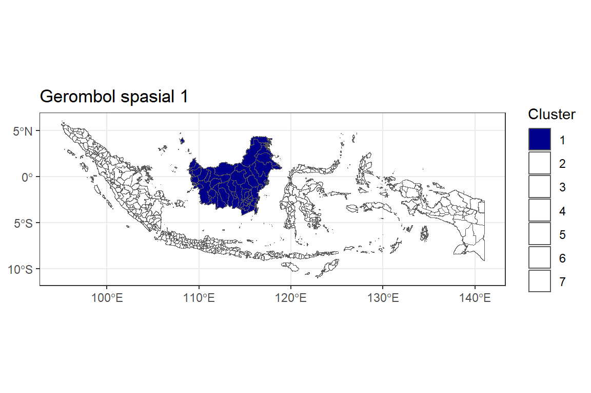
Gerombol ke-2
Y.pembobot4.2 <- ggplot() +
geom_sf(data = indonesia.2, aes(fill = as.factor(Y.pembobot4))) +
labs(title = "Gerombol spasial 2",
fill = "Cluster") +
theme_bw() +
scale_fill_manual(values = c("2" = "darkblue",
"1"="white", "3"="white", "4"="white", "5"="white", "6"="white", "7"="white"))
Y.pembobot4.2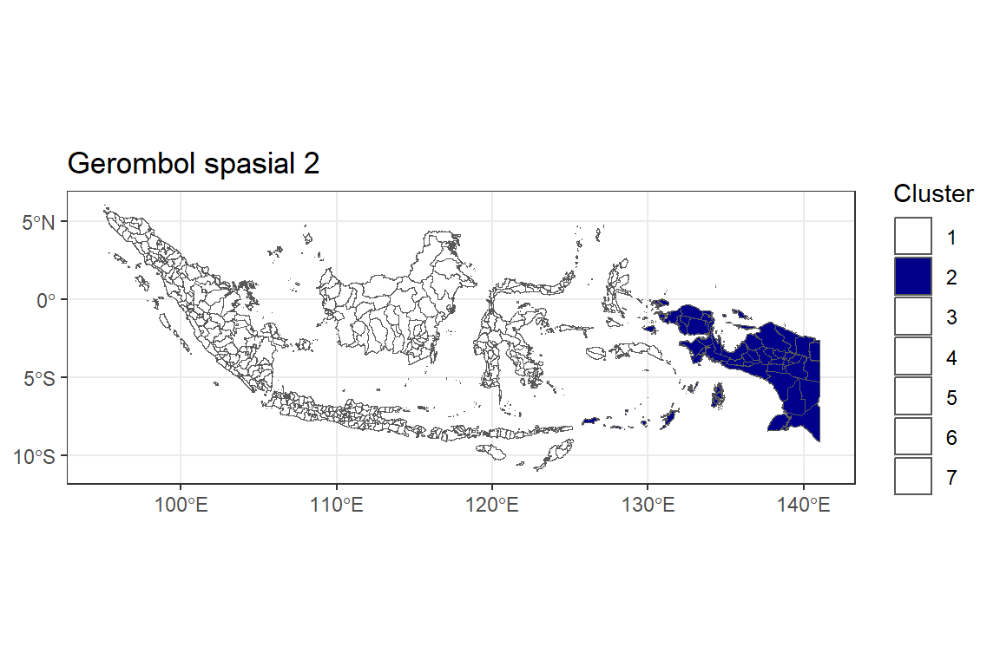
Gerombol ke-3
Y.pembobot4.3 <- ggplot() +
geom_sf(data = indonesia.2, aes(fill = as.factor(Y.pembobot4))) +
labs(title = "Gerombol spasial 3",
fill = "Cluster") +
theme_bw() +
scale_fill_manual(values = c("3" = "darkblue",
"1"="white", "2"="white", "4"="white", "5"="white", "6"="white", "7"="white"))
Y.pembobot4.3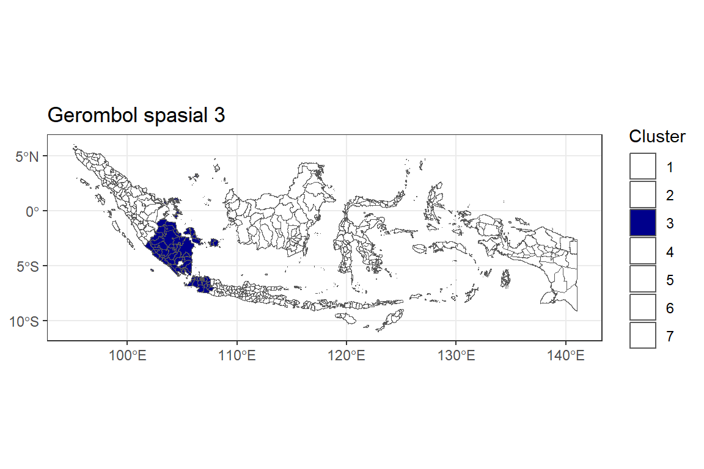
Gerombol ke-4
Y.pembobot4.4 <- ggplot() +
geom_sf(data = indonesia.2, aes(fill = as.factor(Y.pembobot4))) +
labs(title = "Gerombol spasial 4",
fill = "Cluster") +
theme_bw() +
scale_fill_manual(values = c("4" = "darkblue",
"1"="white", "2"="white", "3"="white", "5"="white", "6"="white", "7"="white"))
Y.pembobot4.4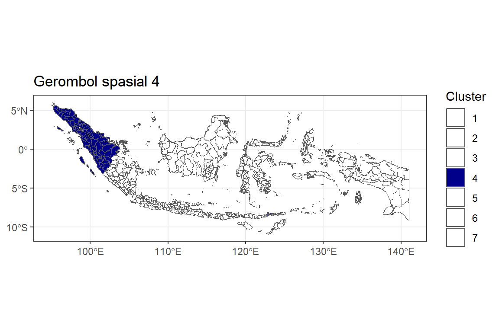
Gerombol ke-5
Y.pembobot4.5 <- ggplot() +
geom_sf(data = indonesia.2, aes(fill = as.factor(Y.pembobot4))) +
labs(title = "Gerombol spasial 5",
fill = "Cluster") +
theme_bw() +
scale_fill_manual(values = c("5" = "darkblue",
"1"="white", "2"="white", "3"="white", "4"="white", "6"="white", "7"="white"))
Y.pembobot4.5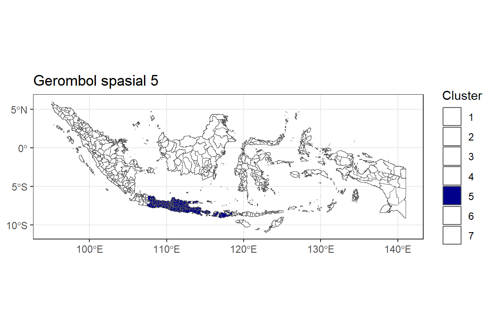
Gerombol ke-6
Y.pembobot4.6 <- ggplot() +
geom_sf(data = indonesia.2, aes(fill = as.factor(Y.pembobot4))) +
labs(title = "Gerombol spasial 6",
fill = "Cluster") +
theme_bw() +
scale_fill_manual(values = c("6" = "darkblue",
"1"="white", "2"="white", "3"="white", "4"="white", "5"="white", "7"="white"))
Y.pembobot4.6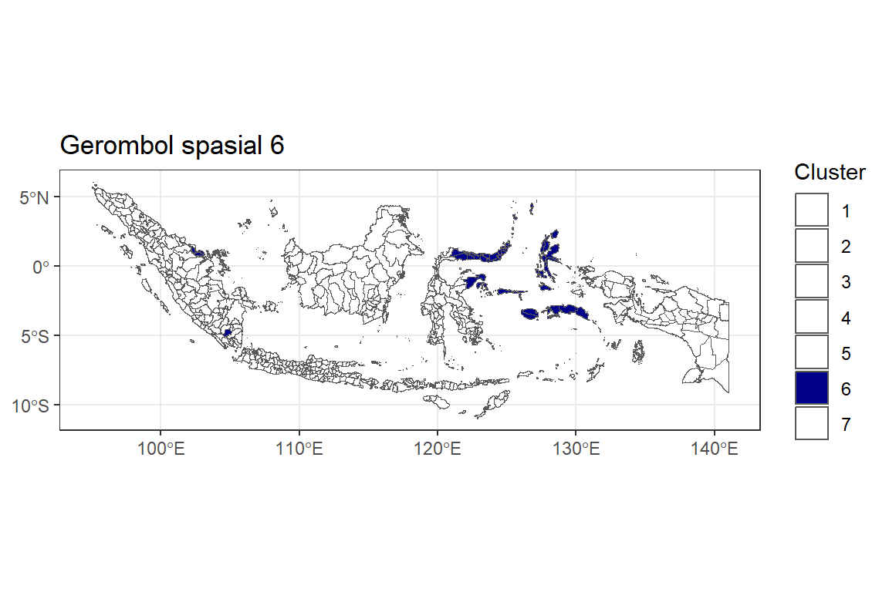
Gerombol ke-7
Y.pembobot4.7 <- ggplot() +
geom_sf(data = indonesia.2, aes(fill = as.factor(Y.pembobot4))) +
labs(title = "Gerombol spasial 7",
fill = "Cluster") +
theme_bw() +
scale_fill_manual(values = c("7" = "darkblue",
"1"="white", "2"="white", "3"="white", "4"="white", "5"="white", "6"="white"))
Y.pembobot4.7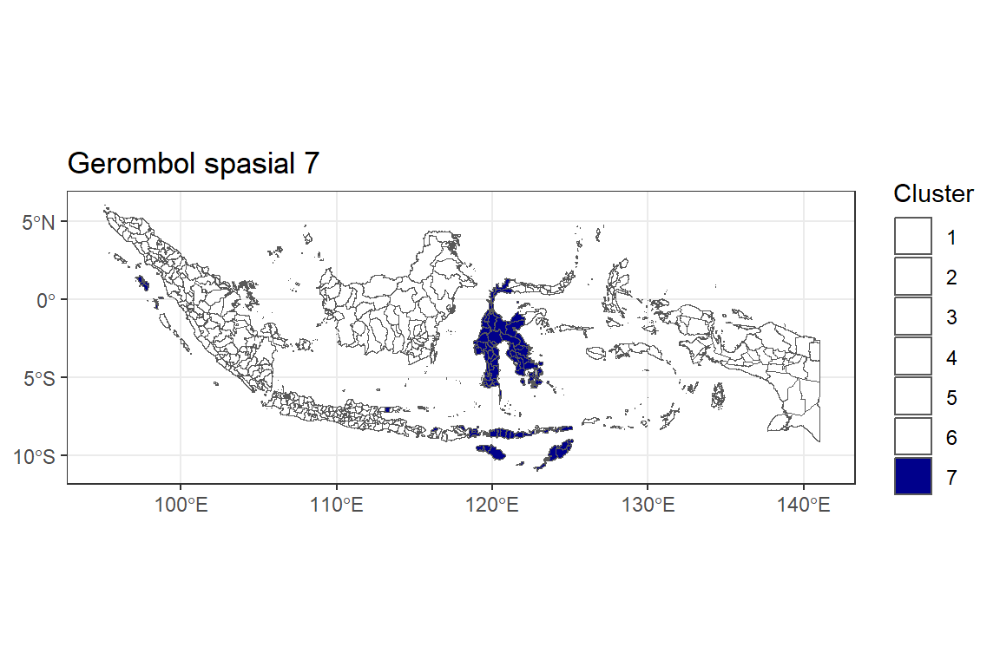
Peubah-Peubah berpengaruh
Peubah berpengaruh signifikan dicari menggunakan uji t pada tahap iterasi terakhir model Regresi Gerombol Spasial. peubah dengan p-value lebih kecil dari 0.05 maka dikatakan signifikan dengan hipotesis sebagai berikut:
\(H_0\): peubah penjelas tidak berpengaruh signifikan terhadap \(Y\) \(H_1\): peubah penjelas berpengaruh signifikan terhadap \(Y\)
fit4 <- SCR(Y, X, W4, Sp, G= 7, Phi=1)
#> [1] "length sepanjang 57 dan p + 1 sebesar 9"
#> [1] "Sekarang adalah gerombol ke- 1"
#>
#> Call:
#> lm(formula = Y[Ind == g] ~ X[Ind == g, ])
#>
#> Residuals:
#> Min 1Q Median 3Q Max
#> -10.898 -4.641 -0.468 4.317 11.419
#>
#> Coefficients:
#> Estimate Std. Error t value Pr(>|t|)
#> (Intercept) 2.39e+01 2.00e+01 1.19 0.2382
#> X[Ind == g, ]1 -1.42e+01 1.31e+01 -1.09 0.2810
#> X[Ind == g, ]2 -2.84e-01 1.33e-01 -2.13 0.0382 *
#> X[Ind == g, ]3 -9.31e-02 4.54e-02 -2.05 0.0458 *
#> X[Ind == g, ]4 5.60e-01 2.60e-01 2.16 0.0360 *
#> X[Ind == g, ]5 -1.62e+00 5.68e-01 -2.85 0.0063 **
#> X[Ind == g, ]6 -9.45e-07 1.85e-06 -0.51 0.6115
#> X[Ind == g, ]7 -7.57e-02 9.23e-02 -0.82 0.4160
#> ---
#> Signif. codes: 0 '***' 0.001 '**' 0.01 '*' 0.05 '.' 0.1 ' ' 1
#>
#> Residual standard error: 6.08 on 49 degrees of freedom
#> Multiple R-squared: 0.518, Adjusted R-squared: 0.449
#> F-statistic: 7.52 on 7 and 49 DF, p-value: 3.85e-06
#>
#> [1] "length sepanjang 46 dan p + 1 sebesar 9"
#> [1] "Sekarang adalah gerombol ke- 2"
#>
#> Call:
#> lm(formula = Y[Ind == g] ~ X[Ind == g, ])
#>
#> Residuals:
#> Min 1Q Median 3Q Max
#> -13.568 -4.249 0.071 1.896 15.719
#>
#> Coefficients:
#> Estimate Std. Error t value Pr(>|t|)
#> (Intercept) 3.96e+01 2.28e+01 1.74 0.0903 .
#> X[Ind == g, ]1 1.19e+00 1.45e+01 0.08 0.9352
#> X[Ind == g, ]2 7.36e-03 1.02e-01 0.07 0.9427
#> X[Ind == g, ]3 -1.85e-01 5.44e-02 -3.41 0.0016 **
#> X[Ind == g, ]4 -1.27e-01 2.44e-01 -0.52 0.6057
#> X[Ind == g, ]5 -1.31e-01 5.20e-01 -0.25 0.8028
#> X[Ind == g, ]6 1.54e-06 2.20e-06 0.70 0.4883
#> X[Ind == g, ]7 -1.47e-01 8.50e-02 -1.72 0.0928 .
#> ---
#> Signif. codes: 0 '***' 0.001 '**' 0.01 '*' 0.05 '.' 0.1 ' ' 1
#>
#> Residual standard error: 6.39 on 38 degrees of freedom
#> Multiple R-squared: 0.586, Adjusted R-squared: 0.509
#> F-statistic: 7.67 on 7 and 38 DF, p-value: 9.06e-06
#>
#> [1] "length sepanjang 93 dan p + 1 sebesar 9"
#> [1] "Sekarang adalah gerombol ke- 3"
#>
#> Call:
#> lm(formula = Y[Ind == g] ~ X[Ind == g, ])
#>
#> Residuals:
#> Min 1Q Median 3Q Max
#> -13.305 -4.082 -0.778 3.075 18.194
#>
#> Coefficients:
#> Estimate Std. Error t value Pr(>|t|)
#> (Intercept) 7.20e+00 1.05e+01 0.68 0.497
#> X[Ind == g, ]1 2.06e+00 9.89e+00 0.21 0.836
#> X[Ind == g, ]2 4.02e-02 7.69e-02 0.52 0.602
#> X[Ind == g, ]3 -1.02e-01 3.35e-02 -3.06 0.003 **
#> X[Ind == g, ]4 2.37e-01 1.41e-01 1.68 0.096 .
#> X[Ind == g, ]5 3.61e-02 3.49e-01 0.10 0.918
#> X[Ind == g, ]6 1.44e-06 1.21e-06 1.19 0.239
#> X[Ind == g, ]7 -1.01e-01 6.89e-02 -1.47 0.144
#> ---
#> Signif. codes: 0 '***' 0.001 '**' 0.01 '*' 0.05 '.' 0.1 ' ' 1
#>
#> Residual standard error: 6.41 on 85 degrees of freedom
#> Multiple R-squared: 0.316, Adjusted R-squared: 0.26
#> F-statistic: 5.61 on 7 and 85 DF, p-value: 2.43e-05
#>
#> [1] "length sepanjang 89 dan p + 1 sebesar 9"
#> [1] "Sekarang adalah gerombol ke- 4"
#>
#> Call:
#> lm(formula = Y[Ind == g] ~ X[Ind == g, ])
#>
#> Residuals:
#> Min 1Q Median 3Q Max
#> -7.757 -2.223 -0.157 2.373 11.821
#>
#> Coefficients:
#> Estimate Std. Error t value Pr(>|t|)
#> (Intercept) 2.85e+01 9.54e+00 2.99 0.0037 **
#> X[Ind == g, ]1 3.09e+00 6.99e+00 0.44 0.6596
#> X[Ind == g, ]2 -2.23e-01 7.00e-02 -3.18 0.0021 **
#> X[Ind == g, ]3 -8.64e-02 2.51e-02 -3.45 0.0009 ***
#> X[Ind == g, ]4 3.42e-01 1.19e-01 2.86 0.0053 **
#> X[Ind == g, ]5 4.83e-01 2.38e-01 2.03 0.0456 *
#> X[Ind == g, ]6 -2.96e-06 9.45e-07 -3.13 0.0024 **
#> X[Ind == g, ]7 -1.16e-01 5.24e-02 -2.21 0.0302 *
#> ---
#> Signif. codes: 0 '***' 0.001 '**' 0.01 '*' 0.05 '.' 0.1 ' ' 1
#>
#> Residual standard error: 4.2 on 81 degrees of freedom
#> Multiple R-squared: 0.375, Adjusted R-squared: 0.321
#> F-statistic: 6.94 on 7 and 81 DF, p-value: 1.8e-06
#>
#> [1] "length sepanjang 104 dan p + 1 sebesar 9"
#> [1] "Sekarang adalah gerombol ke- 5"
#>
#> Call:
#> lm(formula = Y[Ind == g] ~ X[Ind == g, ])
#>
#> Residuals:
#> Min 1Q Median 3Q Max
#> -8.572 -1.976 -0.455 2.251 9.937
#>
#> Coefficients:
#> Estimate Std. Error t value Pr(>|t|)
#> (Intercept) 1.18e+00 6.91e+00 0.17 0.865
#> X[Ind == g, ]1 1.42e+01 5.84e+00 2.43 0.017 *
#> X[Ind == g, ]2 1.36e-01 4.27e-02 3.18 0.002 **
#> X[Ind == g, ]3 -6.11e-02 2.74e-02 -2.23 0.028 *
#> X[Ind == g, ]4 9.45e-02 7.62e-02 1.24 0.218
#> X[Ind == g, ]5 -3.95e-02 1.56e-01 -0.25 0.800
#> X[Ind == g, ]6 -2.26e-07 5.19e-07 -0.44 0.663
#> X[Ind == g, ]7 1.44e-02 5.72e-02 0.25 0.802
#> ---
#> Signif. codes: 0 '***' 0.001 '**' 0.01 '*' 0.05 '.' 0.1 ' ' 1
#>
#> Residual standard error: 3.16 on 96 degrees of freedom
#> Multiple R-squared: 0.436, Adjusted R-squared: 0.395
#> F-statistic: 10.6 on 7 and 96 DF, p-value: 8.07e-10
#>
#> [1] "length sepanjang 47 dan p + 1 sebesar 9"
#> [1] "Sekarang adalah gerombol ke- 6"
#>
#> Call:
#> lm(formula = Y[Ind == g] ~ X[Ind == g, ])
#>
#> Residuals:
#> Min 1Q Median 3Q Max
#> -11.25 -3.89 0.41 3.46 11.75
#>
#> Coefficients:
#> Estimate Std. Error t value Pr(>|t|)
#> (Intercept) 4.61e+00 1.47e+01 0.31 0.75491
#> X[Ind == g, ]1 2.74e+01 1.49e+01 1.84 0.07282 .
#> X[Ind == g, ]2 1.04e-01 1.08e-01 0.96 0.34295
#> X[Ind == g, ]3 -1.52e-01 4.05e-02 -3.76 0.00056 ***
#> X[Ind == g, ]4 2.68e-01 1.98e-01 1.35 0.18478
#> X[Ind == g, ]5 -1.08e+00 4.53e-01 -2.39 0.02156 *
#> X[Ind == g, ]6 6.59e-07 1.54e-06 0.43 0.67143
#> X[Ind == g, ]7 -4.94e-02 6.03e-02 -0.82 0.41796
#> ---
#> Signif. codes: 0 '***' 0.001 '**' 0.01 '*' 0.05 '.' 0.1 ' ' 1
#>
#> Residual standard error: 5.58 on 39 degrees of freedom
#> Multiple R-squared: 0.683, Adjusted R-squared: 0.626
#> F-statistic: 12 on 7 and 39 DF, p-value: 4.73e-08
#>
#> [1] "length sepanjang 78 dan p + 1 sebesar 9"
#> [1] "Sekarang adalah gerombol ke- 7"
#>
#> Call:
#> lm(formula = Y[Ind == g] ~ X[Ind == g, ])
#>
#> Residuals:
#> Min 1Q Median 3Q Max
#> -11.112 -2.991 0.447 3.091 13.683
#>
#> Coefficients:
#> Estimate Std. Error t value Pr(>|t|)
#> (Intercept) 9.18e+00 1.42e+01 0.65 0.5205
#> X[Ind == g, ]1 1.62e+01 8.26e+00 1.96 0.0546 .
#> X[Ind == g, ]2 1.27e-01 9.58e-02 1.32 0.1903
#> X[Ind == g, ]3 -3.77e-02 3.32e-02 -1.13 0.2605
#> X[Ind == g, ]4 2.22e-01 1.70e-01 1.31 0.1958
#> X[Ind == g, ]5 -5.63e-01 3.88e-01 -1.45 0.1508
#> X[Ind == g, ]6 2.88e-07 1.42e-06 0.20 0.8399
#> X[Ind == g, ]7 -1.80e-01 5.41e-02 -3.33 0.0014 **
#> ---
#> Signif. codes: 0 '***' 0.001 '**' 0.01 '*' 0.05 '.' 0.1 ' ' 1
#>
#> Residual standard error: 5.53 on 70 degrees of freedom
#> Multiple R-squared: 0.444, Adjusted R-squared: 0.389
#> F-statistic: 8 on 7 and 70 DF, p-value: 4.15e-07
#>
#> [1] "length sepanjang 57 dan p + 1 sebesar 9"
#> [1] "Sekarang adalah gerombol ke- 1"
#>
#> Call:
#> lm(formula = Y[Ind == g] ~ X[Ind == g, ])
#>
#> Residuals:
#> Min 1Q Median 3Q Max
#> -10.898 -4.641 -0.468 4.317 11.419
#>
#> Coefficients:
#> Estimate Std. Error t value Pr(>|t|)
#> (Intercept) 2.39e+01 2.00e+01 1.19 0.2382
#> X[Ind == g, ]1 -1.42e+01 1.31e+01 -1.09 0.2810
#> X[Ind == g, ]2 -2.84e-01 1.33e-01 -2.13 0.0382 *
#> X[Ind == g, ]3 -9.31e-02 4.54e-02 -2.05 0.0458 *
#> X[Ind == g, ]4 5.60e-01 2.60e-01 2.16 0.0360 *
#> X[Ind == g, ]5 -1.62e+00 5.68e-01 -2.85 0.0063 **
#> X[Ind == g, ]6 -9.45e-07 1.85e-06 -0.51 0.6115
#> X[Ind == g, ]7 -7.57e-02 9.23e-02 -0.82 0.4160
#> ---
#> Signif. codes: 0 '***' 0.001 '**' 0.01 '*' 0.05 '.' 0.1 ' ' 1
#>
#> Residual standard error: 6.08 on 49 degrees of freedom
#> Multiple R-squared: 0.518, Adjusted R-squared: 0.449
#> F-statistic: 7.52 on 7 and 49 DF, p-value: 3.85e-06
#>
#> [1] "length sepanjang 46 dan p + 1 sebesar 9"
#> [1] "Sekarang adalah gerombol ke- 2"
#>
#> Call:
#> lm(formula = Y[Ind == g] ~ X[Ind == g, ])
#>
#> Residuals:
#> Min 1Q Median 3Q Max
#> -13.735 -4.293 0.272 2.026 15.646
#>
#> Coefficients:
#> Estimate Std. Error t value Pr(>|t|)
#> (Intercept) 4.17e+01 2.26e+01 1.84 0.07293 .
#> X[Ind == g, ]1 -2.50e-01 1.45e+01 -0.02 0.98633
#> X[Ind == g, ]2 -1.36e-02 1.00e-01 -0.14 0.89314
#> X[Ind == g, ]3 -1.97e-01 5.45e-02 -3.62 0.00086 ***
#> X[Ind == g, ]4 -1.31e-01 2.43e-01 -0.54 0.59294
#> X[Ind == g, ]5 -1.38e-01 5.19e-01 -0.27 0.79100
#> X[Ind == g, ]6 1.62e-06 2.20e-06 0.73 0.46708
#> X[Ind == g, ]7 -1.48e-01 8.47e-02 -1.75 0.08830 .
#> ---
#> Signif. codes: 0 '***' 0.001 '**' 0.01 '*' 0.05 '.' 0.1 ' ' 1
#>
#> Residual standard error: 6.37 on 38 degrees of freedom
#> Multiple R-squared: 0.598, Adjusted R-squared: 0.524
#> F-statistic: 8.07 on 7 and 38 DF, p-value: 5.39e-06
#>
#> [1] "length sepanjang 91 dan p + 1 sebesar 9"
#> [1] "Sekarang adalah gerombol ke- 3"
#>
#> Call:
#> lm(formula = Y[Ind == g] ~ X[Ind == g, ])
#>
#> Residuals:
#> Min 1Q Median 3Q Max
#> -13.968 -4.052 -0.723 3.172 17.394
#>
#> Coefficients:
#> Estimate Std. Error t value Pr(>|t|)
#> (Intercept) 7.43e+00 1.06e+01 0.70 0.487
#> X[Ind == g, ]1 6.22e-01 1.01e+01 0.06 0.951
#> X[Ind == g, ]2 4.44e-02 7.70e-02 0.58 0.566
#> X[Ind == g, ]3 -1.09e-01 3.22e-02 -3.40 0.001 **
#> X[Ind == g, ]4 2.31e-01 1.41e-01 1.64 0.105
#> X[Ind == g, ]5 8.44e-02 3.50e-01 0.24 0.810
#> X[Ind == g, ]6 1.56e-06 1.23e-06 1.27 0.208
#> X[Ind == g, ]7 -1.01e-01 6.99e-02 -1.44 0.152
#> ---
#> Signif. codes: 0 '***' 0.001 '**' 0.01 '*' 0.05 '.' 0.1 ' ' 1
#>
#> Residual standard error: 6.47 on 83 degrees of freedom
#> Multiple R-squared: 0.335, Adjusted R-squared: 0.279
#> F-statistic: 5.98 on 7 and 83 DF, p-value: 1.19e-05
#>
#> [1] "length sepanjang 92 dan p + 1 sebesar 9"
#> [1] "Sekarang adalah gerombol ke- 4"
#>
#> Call:
#> lm(formula = Y[Ind == g] ~ X[Ind == g, ])
#>
#> Residuals:
#> Min 1Q Median 3Q Max
#> -8.149 -2.650 0.052 2.138 11.941
#>
#> Coefficients:
#> Estimate Std. Error t value Pr(>|t|)
#> (Intercept) 2.87e+01 8.74e+00 3.28 0.00152 **
#> X[Ind == g, ]1 6.98e+00 6.65e+00 1.05 0.29709
#> X[Ind == g, ]2 -2.34e-01 6.37e-02 -3.68 0.00041 ***
#> X[Ind == g, ]3 -5.86e-02 2.71e-02 -2.16 0.03363 *
#> X[Ind == g, ]4 3.52e-01 1.16e-01 3.03 0.00322 **
#> X[Ind == g, ]5 4.03e-01 2.19e-01 1.84 0.06977 .
#> X[Ind == g, ]6 -3.19e-06 8.83e-07 -3.62 0.00051 ***
#> X[Ind == g, ]7 -1.34e-01 4.99e-02 -2.70 0.00849 **
#> ---
#> Signif. codes: 0 '***' 0.001 '**' 0.01 '*' 0.05 '.' 0.1 ' ' 1
#>
#> Residual standard error: 4.01 on 84 degrees of freedom
#> Multiple R-squared: 0.378, Adjusted R-squared: 0.326
#> F-statistic: 7.28 on 7 and 84 DF, p-value: 8.17e-07
#>
#> [1] "length sepanjang 105 dan p + 1 sebesar 9"
#> [1] "Sekarang adalah gerombol ke- 5"
#>
#> Call:
#> lm(formula = Y[Ind == g] ~ X[Ind == g, ])
#>
#> Residuals:
#> Min 1Q Median 3Q Max
#> -8.695 -1.925 -0.205 2.087 6.995
#>
#> Coefficients:
#> Estimate Std. Error t value Pr(>|t|)
#> (Intercept) -5.86e-01 6.35e+00 -0.09 0.92666
#> X[Ind == g, ]1 1.71e+01 5.42e+00 3.15 0.00219 **
#> X[Ind == g, ]2 1.42e-01 3.94e-02 3.59 0.00052 ***
#> X[Ind == g, ]3 -5.88e-02 2.56e-02 -2.29 0.02392 *
#> X[Ind == g, ]4 8.84e-02 7.14e-02 1.24 0.21867
#> X[Ind == g, ]5 -1.17e-01 1.48e-01 -0.79 0.43254
#> X[Ind == g, ]6 -1.25e-07 4.87e-07 -0.26 0.79784
#> X[Ind == g, ]7 3.04e-02 5.33e-02 0.57 0.57039
#> ---
#> Signif. codes: 0 '***' 0.001 '**' 0.01 '*' 0.05 '.' 0.1 ' ' 1
#>
#> Residual standard error: 2.97 on 97 degrees of freedom
#> Multiple R-squared: 0.492, Adjusted R-squared: 0.455
#> F-statistic: 13.4 on 7 and 97 DF, p-value: 5.22e-12
#>
#> [1] "length sepanjang 45 dan p + 1 sebesar 9"
#> [1] "Sekarang adalah gerombol ke- 6"
#>
#> Call:
#> lm(formula = Y[Ind == g] ~ X[Ind == g, ])
#>
#> Residuals:
#> Min 1Q Median 3Q Max
#> -11.405 -3.912 0.302 3.705 12.555
#>
#> Coefficients:
#> Estimate Std. Error t value Pr(>|t|)
#> (Intercept) 6.70e+00 1.49e+01 0.45 0.65456
#> X[Ind == g, ]1 2.93e+01 1.56e+01 1.88 0.06742 .
#> X[Ind == g, ]2 1.26e-01 1.10e-01 1.14 0.26001
#> X[Ind == g, ]3 -1.55e-01 4.14e-02 -3.74 0.00062 ***
#> X[Ind == g, ]4 2.12e-01 2.01e-01 1.05 0.29847
#> X[Ind == g, ]5 -1.03e+00 4.83e-01 -2.14 0.03892 *
#> X[Ind == g, ]6 4.04e-07 1.56e-06 0.26 0.79660
#> X[Ind == g, ]7 -4.65e-02 6.17e-02 -0.75 0.45611
#> ---
#> Signif. codes: 0 '***' 0.001 '**' 0.01 '*' 0.05 '.' 0.1 ' ' 1
#>
#> Residual standard error: 5.64 on 37 degrees of freedom
#> Multiple R-squared: 0.681, Adjusted R-squared: 0.62
#> F-statistic: 11.3 on 7 and 37 DF, p-value: 1.51e-07
#>
#> [1] "length sepanjang 78 dan p + 1 sebesar 9"
#> [1] "Sekarang adalah gerombol ke- 7"
#>
#> Call:
#> lm(formula = Y[Ind == g] ~ X[Ind == g, ])
#>
#> Residuals:
#> Min 1Q Median 3Q Max
#> -11.081 -2.914 0.496 3.087 13.578
#>
#> Coefficients:
#> Estimate Std. Error t value Pr(>|t|)
#> (Intercept) 9.78e+00 1.41e+01 0.69 0.4899
#> X[Ind == g, ]1 1.64e+01 8.33e+00 1.97 0.0530 .
#> X[Ind == g, ]2 1.27e-01 9.58e-02 1.32 0.1900
#> X[Ind == g, ]3 -3.99e-02 3.29e-02 -1.22 0.2282
#> X[Ind == g, ]4 2.17e-01 1.68e-01 1.29 0.2006
#> X[Ind == g, ]5 -5.75e-01 3.81e-01 -1.51 0.1354
#> X[Ind == g, ]6 3.32e-07 1.39e-06 0.24 0.8115
#> X[Ind == g, ]7 -1.85e-01 5.40e-02 -3.42 0.0011 **
#> ---
#> Signif. codes: 0 '***' 0.001 '**' 0.01 '*' 0.05 '.' 0.1 ' ' 1
#>
#> Residual standard error: 5.51 on 70 degrees of freedom
#> Multiple R-squared: 0.454, Adjusted R-squared: 0.399
#> F-statistic: 8.32 on 7 and 70 DF, p-value: 2.35e-07
#>
#> [1] "length sepanjang 57 dan p + 1 sebesar 9"
#> [1] "Sekarang adalah gerombol ke- 1"
#>
#> Call:
#> lm(formula = Y[Ind == g] ~ X[Ind == g, ])
#>
#> Residuals:
#> Min 1Q Median 3Q Max
#> -10.898 -4.641 -0.468 4.317 11.419
#>
#> Coefficients:
#> Estimate Std. Error t value Pr(>|t|)
#> (Intercept) 2.39e+01 2.00e+01 1.19 0.2382
#> X[Ind == g, ]1 -1.42e+01 1.31e+01 -1.09 0.2810
#> X[Ind == g, ]2 -2.84e-01 1.33e-01 -2.13 0.0382 *
#> X[Ind == g, ]3 -9.31e-02 4.54e-02 -2.05 0.0458 *
#> X[Ind == g, ]4 5.60e-01 2.60e-01 2.16 0.0360 *
#> X[Ind == g, ]5 -1.62e+00 5.68e-01 -2.85 0.0063 **
#> X[Ind == g, ]6 -9.45e-07 1.85e-06 -0.51 0.6115
#> X[Ind == g, ]7 -7.57e-02 9.23e-02 -0.82 0.4160
#> ---
#> Signif. codes: 0 '***' 0.001 '**' 0.01 '*' 0.05 '.' 0.1 ' ' 1
#>
#> Residual standard error: 6.08 on 49 degrees of freedom
#> Multiple R-squared: 0.518, Adjusted R-squared: 0.449
#> F-statistic: 7.52 on 7 and 49 DF, p-value: 3.85e-06
#>
#> [1] "length sepanjang 47 dan p + 1 sebesar 9"
#> [1] "Sekarang adalah gerombol ke- 2"
#>
#> Call:
#> lm(formula = Y[Ind == g] ~ X[Ind == g, ])
#>
#> Residuals:
#> Min 1Q Median 3Q Max
#> -13.74 -4.22 0.16 2.00 15.64
#>
#> Coefficients:
#> Estimate Std. Error t value Pr(>|t|)
#> (Intercept) 4.18e+01 2.22e+01 1.88 0.06725 .
#> X[Ind == g, ]1 -3.20e-01 1.41e+01 -0.02 0.98203
#> X[Ind == g, ]2 -1.35e-02 9.91e-02 -0.14 0.89207
#> X[Ind == g, ]3 -1.98e-01 4.66e-02 -4.25 0.00013 ***
#> X[Ind == g, ]4 -1.32e-01 2.36e-01 -0.56 0.57731
#> X[Ind == g, ]5 -1.35e-01 5.00e-01 -0.27 0.78843
#> X[Ind == g, ]6 1.62e-06 2.17e-06 0.75 0.45992
#> X[Ind == g, ]7 -1.48e-01 8.19e-02 -1.80 0.07913 .
#> ---
#> Signif. codes: 0 '***' 0.001 '**' 0.01 '*' 0.05 '.' 0.1 ' ' 1
#>
#> Residual standard error: 6.29 on 39 degrees of freedom
#> Multiple R-squared: 0.608, Adjusted R-squared: 0.538
#> F-statistic: 8.66 on 7 and 39 DF, p-value: 2.25e-06
#>
#> [1] "length sepanjang 89 dan p + 1 sebesar 9"
#> [1] "Sekarang adalah gerombol ke- 3"
#>
#> Call:
#> lm(formula = Y[Ind == g] ~ X[Ind == g, ])
#>
#> Residuals:
#> Min 1Q Median 3Q Max
#> -13.402 -4.039 -0.523 3.000 17.771
#>
#> Coefficients:
#> Estimate Std. Error t value Pr(>|t|)
#> (Intercept) 6.87e+00 1.07e+01 0.64 0.5230
#> X[Ind == g, ]1 1.64e+00 1.02e+01 0.16 0.8723
#> X[Ind == g, ]2 3.72e-02 7.86e-02 0.47 0.6370
#> X[Ind == g, ]3 -1.02e-01 3.43e-02 -2.99 0.0037 **
#> X[Ind == g, ]4 2.53e-01 1.44e-01 1.76 0.0821 .
#> X[Ind == g, ]5 3.81e-02 3.54e-01 0.11 0.9147
#> X[Ind == g, ]6 1.55e-06 1.24e-06 1.25 0.2162
#> X[Ind == g, ]7 -1.08e-01 7.06e-02 -1.52 0.1316
#> ---
#> Signif. codes: 0 '***' 0.001 '**' 0.01 '*' 0.05 '.' 0.1 ' ' 1
#>
#> Residual standard error: 6.5 on 81 degrees of freedom
#> Multiple R-squared: 0.324, Adjusted R-squared: 0.266
#> F-statistic: 5.55 on 7 and 81 DF, p-value: 3.07e-05
#>
#> [1] "length sepanjang 93 dan p + 1 sebesar 9"
#> [1] "Sekarang adalah gerombol ke- 4"
#>
#> Call:
#> lm(formula = Y[Ind == g] ~ X[Ind == g, ])
#>
#> Residuals:
#> Min 1Q Median 3Q Max
#> -8.158 -2.899 -0.019 2.037 11.950
#>
#> Coefficients:
#> Estimate Std. Error t value Pr(>|t|)
#> (Intercept) 2.89e+01 8.71e+00 3.32 0.00132 **
#> X[Ind == g, ]1 7.48e+00 6.60e+00 1.13 0.26056
#> X[Ind == g, ]2 -2.26e-01 6.26e-02 -3.61 0.00052 ***
#> X[Ind == g, ]3 -5.36e-02 2.63e-02 -2.04 0.04466 *
#> X[Ind == g, ]4 3.31e-01 1.13e-01 2.94 0.00423 **
#> X[Ind == g, ]5 4.15e-01 2.18e-01 1.90 0.06021 .
#> X[Ind == g, ]6 -3.14e-06 8.78e-07 -3.57 0.00059 ***
#> X[Ind == g, ]7 -1.39e-01 4.94e-02 -2.82 0.00593 **
#> ---
#> Signif. codes: 0 '***' 0.001 '**' 0.01 '*' 0.05 '.' 0.1 ' ' 1
#>
#> Residual standard error: 4 on 85 degrees of freedom
#> Multiple R-squared: 0.376, Adjusted R-squared: 0.324
#> F-statistic: 7.31 on 7 and 85 DF, p-value: 7.51e-07
#>
#> [1] "length sepanjang 105 dan p + 1 sebesar 9"
#> [1] "Sekarang adalah gerombol ke- 5"
#>
#> Call:
#> lm(formula = Y[Ind == g] ~ X[Ind == g, ])
#>
#> Residuals:
#> Min 1Q Median 3Q Max
#> -8.72 -2.00 -0.29 2.18 6.87
#>
#> Coefficients:
#> Estimate Std. Error t value Pr(>|t|)
#> (Intercept) -5.10e-01 6.09e+00 -0.08 0.93350
#> X[Ind == g, ]1 1.77e+01 5.17e+00 3.42 0.00091 ***
#> X[Ind == g, ]2 1.58e-01 3.82e-02 4.13 7.6e-05 ***
#> X[Ind == g, ]3 -7.47e-02 2.46e-02 -3.03 0.00313 **
#> X[Ind == g, ]4 6.29e-02 6.90e-02 0.91 0.36407
#> X[Ind == g, ]5 -1.65e-02 1.45e-01 -0.11 0.90932
#> X[Ind == g, ]6 -1.73e-07 4.68e-07 -0.37 0.71162
#> X[Ind == g, ]7 4.56e-02 5.12e-02 0.89 0.37520
#> ---
#> Signif. codes: 0 '***' 0.001 '**' 0.01 '*' 0.05 '.' 0.1 ' ' 1
#>
#> Residual standard error: 2.84 on 97 degrees of freedom
#> Multiple R-squared: 0.534, Adjusted R-squared: 0.501
#> F-statistic: 15.9 on 7 and 97 DF, p-value: 9.49e-14
#>
#> [1] "length sepanjang 43 dan p + 1 sebesar 9"
#> [1] "Sekarang adalah gerombol ke- 6"
#>
#> Call:
#> lm(formula = Y[Ind == g] ~ X[Ind == g, ])
#>
#> Residuals:
#> Min 1Q Median 3Q Max
#> -11.877 -4.054 0.647 3.869 12.453
#>
#> Coefficients:
#> Estimate Std. Error t value Pr(>|t|)
#> (Intercept) 3.61e+00 1.56e+01 0.23 0.81846
#> X[Ind == g, ]1 3.22e+01 1.61e+01 2.00 0.05317 .
#> X[Ind == g, ]2 1.54e-01 1.14e-01 1.35 0.18711
#> X[Ind == g, ]3 -1.51e-01 4.21e-02 -3.59 0.00099 ***
#> X[Ind == g, ]4 1.98e-01 2.04e-01 0.97 0.33844
#> X[Ind == g, ]5 -1.04e+00 4.88e-01 -2.12 0.04080 *
#> X[Ind == g, ]6 8.78e-07 1.75e-06 0.50 0.61961
#> X[Ind == g, ]7 -4.17e-02 6.25e-02 -0.67 0.50909
#> ---
#> Signif. codes: 0 '***' 0.001 '**' 0.01 '*' 0.05 '.' 0.1 ' ' 1
#>
#> Residual standard error: 5.7 on 35 degrees of freedom
#> Multiple R-squared: 0.688, Adjusted R-squared: 0.625
#> F-statistic: 11 on 7 and 35 DF, p-value: 2.9e-07
#>
#> [1] "length sepanjang 80 dan p + 1 sebesar 9"
#> [1] "Sekarang adalah gerombol ke- 7"
#>
#> Call:
#> lm(formula = Y[Ind == g] ~ X[Ind == g, ])
#>
#> Residuals:
#> Min 1Q Median 3Q Max
#> -10.905 -3.096 0.489 3.102 13.888
#>
#> Coefficients:
#> Estimate Std. Error t value Pr(>|t|)
#> (Intercept) 1.10e+01 1.36e+01 0.81 0.42294
#> X[Ind == g, ]1 1.56e+01 8.18e+00 1.91 0.05993 .
#> X[Ind == g, ]2 1.16e-01 9.35e-02 1.25 0.21710
#> X[Ind == g, ]3 -3.74e-02 3.18e-02 -1.17 0.24414
#> X[Ind == g, ]4 2.26e-01 1.66e-01 1.36 0.17679
#> X[Ind == g, ]5 -6.05e-01 3.58e-01 -1.69 0.09531 .
#> X[Ind == g, ]6 1.36e-07 1.26e-06 0.11 0.91420
#> X[Ind == g, ]7 -1.92e-01 5.38e-02 -3.56 0.00066 ***
#> ---
#> Signif. codes: 0 '***' 0.001 '**' 0.01 '*' 0.05 '.' 0.1 ' ' 1
#>
#> Residual standard error: 5.47 on 72 degrees of freedom
#> Multiple R-squared: 0.461, Adjusted R-squared: 0.408
#> F-statistic: 8.79 on 7 and 72 DF, p-value: 9.01e-08
#>
#> [1] "length sepanjang 57 dan p + 1 sebesar 9"
#> [1] "Sekarang adalah gerombol ke- 1"
#>
#> Call:
#> lm(formula = Y[Ind == g] ~ X[Ind == g, ])
#>
#> Residuals:
#> Min 1Q Median 3Q Max
#> -10.898 -4.641 -0.468 4.317 11.419
#>
#> Coefficients:
#> Estimate Std. Error t value Pr(>|t|)
#> (Intercept) 2.39e+01 2.00e+01 1.19 0.2382
#> X[Ind == g, ]1 -1.42e+01 1.31e+01 -1.09 0.2810
#> X[Ind == g, ]2 -2.84e-01 1.33e-01 -2.13 0.0382 *
#> X[Ind == g, ]3 -9.31e-02 4.54e-02 -2.05 0.0458 *
#> X[Ind == g, ]4 5.60e-01 2.60e-01 2.16 0.0360 *
#> X[Ind == g, ]5 -1.62e+00 5.68e-01 -2.85 0.0063 **
#> X[Ind == g, ]6 -9.45e-07 1.85e-06 -0.51 0.6115
#> X[Ind == g, ]7 -7.57e-02 9.23e-02 -0.82 0.4160
#> ---
#> Signif. codes: 0 '***' 0.001 '**' 0.01 '*' 0.05 '.' 0.1 ' ' 1
#>
#> Residual standard error: 6.08 on 49 degrees of freedom
#> Multiple R-squared: 0.518, Adjusted R-squared: 0.449
#> F-statistic: 7.52 on 7 and 49 DF, p-value: 3.85e-06
#>
#> [1] "length sepanjang 48 dan p + 1 sebesar 9"
#> [1] "Sekarang adalah gerombol ke- 2"
#>
#> Call:
#> lm(formula = Y[Ind == g] ~ X[Ind == g, ])
#>
#> Residuals:
#> Min 1Q Median 3Q Max
#> -13.902 -4.574 0.071 1.872 15.372
#>
#> Coefficients:
#> Estimate Std. Error t value Pr(>|t|)
#> (Intercept) 4.99e+01 2.05e+01 2.43 0.01963 *
#> X[Ind == g, ]1 -3.62e+00 1.37e+01 -0.26 0.79262
#> X[Ind == g, ]2 -2.36e-02 9.85e-02 -0.24 0.81188
#> X[Ind == g, ]3 -1.91e-01 4.59e-02 -4.15 0.00017 ***
#> X[Ind == g, ]4 -1.89e-01 2.28e-01 -0.83 0.41156
#> X[Ind == g, ]5 -2.12e-01 4.93e-01 -0.43 0.66992
#> X[Ind == g, ]6 1.17e-06 2.12e-06 0.55 0.58230
#> X[Ind == g, ]7 -1.83e-01 7.33e-02 -2.50 0.01681 *
#> ---
#> Signif. codes: 0 '***' 0.001 '**' 0.01 '*' 0.05 '.' 0.1 ' ' 1
#>
#> Residual standard error: 6.29 on 40 degrees of freedom
#> Multiple R-squared: 0.608, Adjusted R-squared: 0.54
#> F-statistic: 8.88 on 7 and 40 DF, p-value: 1.49e-06
#>
#> [1] "length sepanjang 88 dan p + 1 sebesar 9"
#> [1] "Sekarang adalah gerombol ke- 3"
#>
#> Call:
#> lm(formula = Y[Ind == g] ~ X[Ind == g, ])
#>
#> Residuals:
#> Min 1Q Median 3Q Max
#> -13.644 -4.213 -0.937 3.089 17.449
#>
#> Coefficients:
#> Estimate Std. Error t value Pr(>|t|)
#> (Intercept) 3.05e+00 1.09e+01 0.28 0.7808
#> X[Ind == g, ]1 3.55e+00 1.02e+01 0.35 0.7283
#> X[Ind == g, ]2 4.12e-02 7.81e-02 0.53 0.5988
#> X[Ind == g, ]3 -1.08e-01 3.42e-02 -3.15 0.0023 **
#> X[Ind == g, ]4 2.53e-01 1.43e-01 1.77 0.0804 .
#> X[Ind == g, ]5 5.77e-02 3.52e-01 0.16 0.8701
#> X[Ind == g, ]6 1.69e-06 1.23e-06 1.37 0.1760
#> X[Ind == g, ]7 -6.94e-02 7.45e-02 -0.93 0.3549
#> ---
#> Signif. codes: 0 '***' 0.001 '**' 0.01 '*' 0.05 '.' 0.1 ' ' 1
#>
#> Residual standard error: 6.45 on 80 degrees of freedom
#> Multiple R-squared: 0.322, Adjusted R-squared: 0.263
#> F-statistic: 5.42 on 7 and 80 DF, p-value: 4.05e-05
#>
#> [1] "length sepanjang 93 dan p + 1 sebesar 9"
#> [1] "Sekarang adalah gerombol ke- 4"
#>
#> Call:
#> lm(formula = Y[Ind == g] ~ X[Ind == g, ])
#>
#> Residuals:
#> Min 1Q Median 3Q Max
#> -8.158 -2.899 -0.019 2.037 11.950
#>
#> Coefficients:
#> Estimate Std. Error t value Pr(>|t|)
#> (Intercept) 2.89e+01 8.71e+00 3.32 0.00132 **
#> X[Ind == g, ]1 7.48e+00 6.60e+00 1.13 0.26056
#> X[Ind == g, ]2 -2.26e-01 6.26e-02 -3.61 0.00052 ***
#> X[Ind == g, ]3 -5.36e-02 2.63e-02 -2.04 0.04466 *
#> X[Ind == g, ]4 3.31e-01 1.13e-01 2.94 0.00423 **
#> X[Ind == g, ]5 4.15e-01 2.18e-01 1.90 0.06021 .
#> X[Ind == g, ]6 -3.14e-06 8.78e-07 -3.57 0.00059 ***
#> X[Ind == g, ]7 -1.39e-01 4.94e-02 -2.82 0.00593 **
#> ---
#> Signif. codes: 0 '***' 0.001 '**' 0.01 '*' 0.05 '.' 0.1 ' ' 1
#>
#> Residual standard error: 4 on 85 degrees of freedom
#> Multiple R-squared: 0.376, Adjusted R-squared: 0.324
#> F-statistic: 7.31 on 7 and 85 DF, p-value: 7.51e-07
#>
#> [1] "length sepanjang 104 dan p + 1 sebesar 9"
#> [1] "Sekarang adalah gerombol ke- 5"
#>
#> Call:
#> lm(formula = Y[Ind == g] ~ X[Ind == g, ])
#>
#> Residuals:
#> Min 1Q Median 3Q Max
#> -8.74 -1.97 -0.25 2.11 6.84
#>
#> Coefficients:
#> Estimate Std. Error t value Pr(>|t|)
#> (Intercept) -1.66e-01 5.94e+00 -0.03 0.97773
#> X[Ind == g, ]1 1.76e+01 5.04e+00 3.50 0.00072 ***
#> X[Ind == g, ]2 1.52e-01 3.72e-02 4.08 9.4e-05 ***
#> X[Ind == g, ]3 -7.93e-02 2.41e-02 -3.29 0.00139 **
#> X[Ind == g, ]4 6.75e-02 6.72e-02 1.00 0.31756
#> X[Ind == g, ]5 -3.01e-02 1.41e-01 -0.21 0.83134
#> X[Ind == g, ]6 -2.24e-07 4.56e-07 -0.49 0.62507
#> X[Ind == g, ]7 5.04e-02 4.99e-02 1.01 0.31485
#> ---
#> Signif. codes: 0 '***' 0.001 '**' 0.01 '*' 0.05 '.' 0.1 ' ' 1
#>
#> Residual standard error: 2.77 on 96 degrees of freedom
#> Multiple R-squared: 0.554, Adjusted R-squared: 0.522
#> F-statistic: 17 on 7 and 96 DF, p-value: 1.82e-14
#>
#> [1] "length sepanjang 42 dan p + 1 sebesar 9"
#> [1] "Sekarang adalah gerombol ke- 6"
#>
#> Call:
#> lm(formula = Y[Ind == g] ~ X[Ind == g, ])
#>
#> Residuals:
#> Min 1Q Median 3Q Max
#> -12.11 -3.96 0.30 3.76 11.27
#>
#> Coefficients:
#> Estimate Std. Error t value Pr(>|t|)
#> (Intercept) -3.35e+00 1.67e+01 -0.20 0.8424
#> X[Ind == g, ]1 3.94e+01 1.72e+01 2.29 0.0284 *
#> X[Ind == g, ]2 1.95e-01 1.19e-01 1.63 0.1114
#> X[Ind == g, ]3 -1.49e-01 4.20e-02 -3.55 0.0011 **
#> X[Ind == g, ]4 2.51e-01 2.08e-01 1.21 0.2364
#> X[Ind == g, ]5 -9.25e-01 4.96e-01 -1.86 0.0709 .
#> X[Ind == g, ]6 1.68e-06 1.88e-06 0.89 0.3771
#> X[Ind == g, ]7 -7.12e-02 6.74e-02 -1.06 0.2979
#> ---
#> Signif. codes: 0 '***' 0.001 '**' 0.01 '*' 0.05 '.' 0.1 ' ' 1
#>
#> Residual standard error: 5.67 on 34 degrees of freedom
#> Multiple R-squared: 0.676, Adjusted R-squared: 0.609
#> F-statistic: 10.1 on 7 and 34 DF, p-value: 8.98e-07
#>
#> [1] "length sepanjang 82 dan p + 1 sebesar 9"
#> [1] "Sekarang adalah gerombol ke- 7"
#>
#> Call:
#> lm(formula = Y[Ind == g] ~ X[Ind == g, ])
#>
#> Residuals:
#> Min 1Q Median 3Q Max
#> -10.936 -3.040 0.541 3.154 13.947
#>
#> Coefficients:
#> Estimate Std. Error t value Pr(>|t|)
#> (Intercept) 9.54e+00 1.31e+01 0.73 0.46869
#> X[Ind == g, ]1 1.55e+01 7.94e+00 1.95 0.05491 .
#> X[Ind == g, ]2 1.29e-01 8.91e-02 1.45 0.15115
#> X[Ind == g, ]3 -3.44e-02 3.10e-02 -1.11 0.27096
#> X[Ind == g, ]4 2.29e-01 1.63e-01 1.40 0.16498
#> X[Ind == g, ]5 -6.20e-01 3.53e-01 -1.76 0.08304 .
#> X[Ind == g, ]6 1.39e-07 1.22e-06 0.11 0.91002
#> X[Ind == g, ]7 -1.89e-01 5.29e-02 -3.57 0.00064 ***
#> ---
#> Signif. codes: 0 '***' 0.001 '**' 0.01 '*' 0.05 '.' 0.1 ' ' 1
#>
#> Residual standard error: 5.41 on 74 degrees of freedom
#> Multiple R-squared: 0.509, Adjusted R-squared: 0.462
#> F-statistic: 10.9 on 7 and 74 DF, p-value: 2.13e-09
#>
#> [1] "length sepanjang 57 dan p + 1 sebesar 9"
#> [1] "Sekarang adalah gerombol ke- 1"
#>
#> Call:
#> lm(formula = Y[Ind == g] ~ X[Ind == g, ])
#>
#> Residuals:
#> Min 1Q Median 3Q Max
#> -10.898 -4.641 -0.468 4.317 11.419
#>
#> Coefficients:
#> Estimate Std. Error t value Pr(>|t|)
#> (Intercept) 2.39e+01 2.00e+01 1.19 0.2382
#> X[Ind == g, ]1 -1.42e+01 1.31e+01 -1.09 0.2810
#> X[Ind == g, ]2 -2.84e-01 1.33e-01 -2.13 0.0382 *
#> X[Ind == g, ]3 -9.31e-02 4.54e-02 -2.05 0.0458 *
#> X[Ind == g, ]4 5.60e-01 2.60e-01 2.16 0.0360 *
#> X[Ind == g, ]5 -1.62e+00 5.68e-01 -2.85 0.0063 **
#> X[Ind == g, ]6 -9.45e-07 1.85e-06 -0.51 0.6115
#> X[Ind == g, ]7 -7.57e-02 9.23e-02 -0.82 0.4160
#> ---
#> Signif. codes: 0 '***' 0.001 '**' 0.01 '*' 0.05 '.' 0.1 ' ' 1
#>
#> Residual standard error: 6.08 on 49 degrees of freedom
#> Multiple R-squared: 0.518, Adjusted R-squared: 0.449
#> F-statistic: 7.52 on 7 and 49 DF, p-value: 3.85e-06
#>
#> [1] "length sepanjang 48 dan p + 1 sebesar 9"
#> [1] "Sekarang adalah gerombol ke- 2"
#>
#> Call:
#> lm(formula = Y[Ind == g] ~ X[Ind == g, ])
#>
#> Residuals:
#> Min 1Q Median 3Q Max
#> -13.902 -4.574 0.071 1.872 15.372
#>
#> Coefficients:
#> Estimate Std. Error t value Pr(>|t|)
#> (Intercept) 4.99e+01 2.05e+01 2.43 0.01963 *
#> X[Ind == g, ]1 -3.62e+00 1.37e+01 -0.26 0.79262
#> X[Ind == g, ]2 -2.36e-02 9.85e-02 -0.24 0.81188
#> X[Ind == g, ]3 -1.91e-01 4.59e-02 -4.15 0.00017 ***
#> X[Ind == g, ]4 -1.89e-01 2.28e-01 -0.83 0.41156
#> X[Ind == g, ]5 -2.12e-01 4.93e-01 -0.43 0.66992
#> X[Ind == g, ]6 1.17e-06 2.12e-06 0.55 0.58230
#> X[Ind == g, ]7 -1.83e-01 7.33e-02 -2.50 0.01681 *
#> ---
#> Signif. codes: 0 '***' 0.001 '**' 0.01 '*' 0.05 '.' 0.1 ' ' 1
#>
#> Residual standard error: 6.29 on 40 degrees of freedom
#> Multiple R-squared: 0.608, Adjusted R-squared: 0.54
#> F-statistic: 8.88 on 7 and 40 DF, p-value: 1.49e-06
#>
#> [1] "length sepanjang 88 dan p + 1 sebesar 9"
#> [1] "Sekarang adalah gerombol ke- 3"
#>
#> Call:
#> lm(formula = Y[Ind == g] ~ X[Ind == g, ])
#>
#> Residuals:
#> Min 1Q Median 3Q Max
#> -13.644 -4.213 -0.937 3.089 17.449
#>
#> Coefficients:
#> Estimate Std. Error t value Pr(>|t|)
#> (Intercept) 3.05e+00 1.09e+01 0.28 0.7808
#> X[Ind == g, ]1 3.55e+00 1.02e+01 0.35 0.7283
#> X[Ind == g, ]2 4.12e-02 7.81e-02 0.53 0.5988
#> X[Ind == g, ]3 -1.08e-01 3.42e-02 -3.15 0.0023 **
#> X[Ind == g, ]4 2.53e-01 1.43e-01 1.77 0.0804 .
#> X[Ind == g, ]5 5.77e-02 3.52e-01 0.16 0.8701
#> X[Ind == g, ]6 1.69e-06 1.23e-06 1.37 0.1760
#> X[Ind == g, ]7 -6.94e-02 7.45e-02 -0.93 0.3549
#> ---
#> Signif. codes: 0 '***' 0.001 '**' 0.01 '*' 0.05 '.' 0.1 ' ' 1
#>
#> Residual standard error: 6.45 on 80 degrees of freedom
#> Multiple R-squared: 0.322, Adjusted R-squared: 0.263
#> F-statistic: 5.42 on 7 and 80 DF, p-value: 4.05e-05
#>
#> [1] "length sepanjang 94 dan p + 1 sebesar 9"
#> [1] "Sekarang adalah gerombol ke- 4"
#>
#> Call:
#> lm(formula = Y[Ind == g] ~ X[Ind == g, ])
#>
#> Residuals:
#> Min 1Q Median 3Q Max
#> -8.015 -3.029 0.085 2.113 12.001
#>
#> Coefficients:
#> Estimate Std. Error t value Pr(>|t|)
#> (Intercept) 2.87e+01 8.74e+00 3.29 0.00147 **
#> X[Ind == g, ]1 7.08e+00 6.61e+00 1.07 0.28726
#> X[Ind == g, ]2 -2.32e-01 6.26e-02 -3.70 0.00037 ***
#> X[Ind == g, ]3 -5.51e-02 2.64e-02 -2.09 0.03959 *
#> X[Ind == g, ]4 3.45e-01 1.12e-01 3.07 0.00284 **
#> X[Ind == g, ]5 4.39e-01 2.18e-01 2.02 0.04696 *
#> X[Ind == g, ]6 -3.24e-06 8.75e-07 -3.71 0.00037 ***
#> X[Ind == g, ]7 -1.37e-01 4.95e-02 -2.78 0.00670 **
#> ---
#> Signif. codes: 0 '***' 0.001 '**' 0.01 '*' 0.05 '.' 0.1 ' ' 1
#>
#> Residual standard error: 4.02 on 86 degrees of freedom
#> Multiple R-squared: 0.382, Adjusted R-squared: 0.331
#> F-statistic: 7.58 on 7 and 86 DF, p-value: 4.2e-07
#>
#> [1] "length sepanjang 103 dan p + 1 sebesar 9"
#> [1] "Sekarang adalah gerombol ke- 5"
#>
#> Call:
#> lm(formula = Y[Ind == g] ~ X[Ind == g, ])
#>
#> Residuals:
#> Min 1Q Median 3Q Max
#> -6.078 -2.076 -0.417 2.125 6.900
#>
#> Coefficients:
#> Estimate Std. Error t value Pr(>|t|)
#> (Intercept) 6.72e-01 5.63e+00 0.12 0.90530
#> X[Ind == g, ]1 1.85e+01 4.78e+00 3.87 0.00020 ***
#> X[Ind == g, ]2 1.63e-01 3.55e-02 4.59 1.4e-05 ***
#> X[Ind == g, ]3 -7.89e-02 2.28e-02 -3.46 0.00082 ***
#> X[Ind == g, ]4 6.72e-02 6.37e-02 1.05 0.29467
#> X[Ind == g, ]5 -5.84e-02 1.34e-01 -0.44 0.66364
#> X[Ind == g, ]6 -8.16e-08 4.34e-07 -0.19 0.85147
#> X[Ind == g, ]7 3.29e-02 4.76e-02 0.69 0.49169
#> ---
#> Signif. codes: 0 '***' 0.001 '**' 0.01 '*' 0.05 '.' 0.1 ' ' 1
#>
#> Residual standard error: 2.63 on 95 degrees of freedom
#> Multiple R-squared: 0.598, Adjusted R-squared: 0.569
#> F-statistic: 20.2 on 7 and 95 DF, p-value: 2.27e-16
#>
#> [1] "length sepanjang 41 dan p + 1 sebesar 9"
#> [1] "Sekarang adalah gerombol ke- 6"
#>
#> Call:
#> lm(formula = Y[Ind == g] ~ X[Ind == g, ])
#>
#> Residuals:
#> Min 1Q Median 3Q Max
#> -12.122 -3.975 0.283 3.843 10.947
#>
#> Coefficients:
#> Estimate Std. Error t value Pr(>|t|)
#> (Intercept) -4.78e+00 1.71e+01 -0.28 0.7818
#> X[Ind == g, ]1 4.03e+01 1.75e+01 2.30 0.0276 *
#> X[Ind == g, ]2 1.97e-01 1.21e-01 1.63 0.1118
#> X[Ind == g, ]3 -1.49e-01 4.24e-02 -3.51 0.0013 **
#> X[Ind == g, ]4 2.66e-01 2.12e-01 1.25 0.2194
#> X[Ind == g, ]5 -9.16e-01 5.02e-01 -1.83 0.0769 .
#> X[Ind == g, ]6 1.91e-06 1.95e-06 0.98 0.3346
#> X[Ind == g, ]7 -7.66e-02 6.89e-02 -1.11 0.2743
#> ---
#> Signif. codes: 0 '***' 0.001 '**' 0.01 '*' 0.05 '.' 0.1 ' ' 1
#>
#> Residual standard error: 5.74 on 33 degrees of freedom
#> Multiple R-squared: 0.676, Adjusted R-squared: 0.607
#> F-statistic: 9.84 on 7 and 33 DF, p-value: 1.43e-06
#>
#> [1] "length sepanjang 83 dan p + 1 sebesar 9"
#> [1] "Sekarang adalah gerombol ke- 7"
#>
#> Call:
#> lm(formula = Y[Ind == g] ~ X[Ind == g, ])
#>
#> Residuals:
#> Min 1Q Median 3Q Max
#> -10.939 -3.037 0.514 3.057 13.968
#>
#> Coefficients:
#> Estimate Std. Error t value Pr(>|t|)
#> (Intercept) 9.55e+00 1.30e+01 0.73 0.46531
#> X[Ind == g, ]1 1.55e+01 7.89e+00 1.96 0.05351 .
#> X[Ind == g, ]2 1.30e-01 8.83e-02 1.47 0.14639
#> X[Ind == g, ]3 -3.42e-02 3.07e-02 -1.11 0.26958
#> X[Ind == g, ]4 2.28e-01 1.62e-01 1.41 0.16274
#> X[Ind == g, ]5 -6.19e-01 3.50e-01 -1.77 0.08129 .
#> X[Ind == g, ]6 1.26e-07 1.21e-06 0.10 0.91757
#> X[Ind == g, ]7 -1.88e-01 5.25e-02 -3.59 0.00059 ***
#> ---
#> Signif. codes: 0 '***' 0.001 '**' 0.01 '*' 0.05 '.' 0.1 ' ' 1
#>
#> Residual standard error: 5.37 on 75 degrees of freedom
#> Multiple R-squared: 0.51, Adjusted R-squared: 0.464
#> F-statistic: 11.2 on 7 and 75 DF, p-value: 1.37e-09
#>
#> [1] "length sepanjang 57 dan p + 1 sebesar 9"
#> [1] "Sekarang adalah gerombol ke- 1"
#>
#> Call:
#> lm(formula = Y[Ind == g] ~ X[Ind == g, ])
#>
#> Residuals:
#> Min 1Q Median 3Q Max
#> -10.898 -4.641 -0.468 4.317 11.419
#>
#> Coefficients:
#> Estimate Std. Error t value Pr(>|t|)
#> (Intercept) 2.39e+01 2.00e+01 1.19 0.2382
#> X[Ind == g, ]1 -1.42e+01 1.31e+01 -1.09 0.2810
#> X[Ind == g, ]2 -2.84e-01 1.33e-01 -2.13 0.0382 *
#> X[Ind == g, ]3 -9.31e-02 4.54e-02 -2.05 0.0458 *
#> X[Ind == g, ]4 5.60e-01 2.60e-01 2.16 0.0360 *
#> X[Ind == g, ]5 -1.62e+00 5.68e-01 -2.85 0.0063 **
#> X[Ind == g, ]6 -9.45e-07 1.85e-06 -0.51 0.6115
#> X[Ind == g, ]7 -7.57e-02 9.23e-02 -0.82 0.4160
#> ---
#> Signif. codes: 0 '***' 0.001 '**' 0.01 '*' 0.05 '.' 0.1 ' ' 1
#>
#> Residual standard error: 6.08 on 49 degrees of freedom
#> Multiple R-squared: 0.518, Adjusted R-squared: 0.449
#> F-statistic: 7.52 on 7 and 49 DF, p-value: 3.85e-06
#>
#> [1] "length sepanjang 48 dan p + 1 sebesar 9"
#> [1] "Sekarang adalah gerombol ke- 2"
#>
#> Call:
#> lm(formula = Y[Ind == g] ~ X[Ind == g, ])
#>
#> Residuals:
#> Min 1Q Median 3Q Max
#> -13.902 -4.574 0.071 1.872 15.372
#>
#> Coefficients:
#> Estimate Std. Error t value Pr(>|t|)
#> (Intercept) 4.99e+01 2.05e+01 2.43 0.01963 *
#> X[Ind == g, ]1 -3.62e+00 1.37e+01 -0.26 0.79262
#> X[Ind == g, ]2 -2.36e-02 9.85e-02 -0.24 0.81188
#> X[Ind == g, ]3 -1.91e-01 4.59e-02 -4.15 0.00017 ***
#> X[Ind == g, ]4 -1.89e-01 2.28e-01 -0.83 0.41156
#> X[Ind == g, ]5 -2.12e-01 4.93e-01 -0.43 0.66992
#> X[Ind == g, ]6 1.17e-06 2.12e-06 0.55 0.58230
#> X[Ind == g, ]7 -1.83e-01 7.33e-02 -2.50 0.01681 *
#> ---
#> Signif. codes: 0 '***' 0.001 '**' 0.01 '*' 0.05 '.' 0.1 ' ' 1
#>
#> Residual standard error: 6.29 on 40 degrees of freedom
#> Multiple R-squared: 0.608, Adjusted R-squared: 0.54
#> F-statistic: 8.88 on 7 and 40 DF, p-value: 1.49e-06
#>
#> [1] "length sepanjang 88 dan p + 1 sebesar 9"
#> [1] "Sekarang adalah gerombol ke- 3"
#>
#> Call:
#> lm(formula = Y[Ind == g] ~ X[Ind == g, ])
#>
#> Residuals:
#> Min 1Q Median 3Q Max
#> -13.644 -4.213 -0.937 3.089 17.449
#>
#> Coefficients:
#> Estimate Std. Error t value Pr(>|t|)
#> (Intercept) 3.05e+00 1.09e+01 0.28 0.7808
#> X[Ind == g, ]1 3.55e+00 1.02e+01 0.35 0.7283
#> X[Ind == g, ]2 4.12e-02 7.81e-02 0.53 0.5988
#> X[Ind == g, ]3 -1.08e-01 3.42e-02 -3.15 0.0023 **
#> X[Ind == g, ]4 2.53e-01 1.43e-01 1.77 0.0804 .
#> X[Ind == g, ]5 5.77e-02 3.52e-01 0.16 0.8701
#> X[Ind == g, ]6 1.69e-06 1.23e-06 1.37 0.1760
#> X[Ind == g, ]7 -6.94e-02 7.45e-02 -0.93 0.3549
#> ---
#> Signif. codes: 0 '***' 0.001 '**' 0.01 '*' 0.05 '.' 0.1 ' ' 1
#>
#> Residual standard error: 6.45 on 80 degrees of freedom
#> Multiple R-squared: 0.322, Adjusted R-squared: 0.263
#> F-statistic: 5.42 on 7 and 80 DF, p-value: 4.05e-05
#>
#> [1] "length sepanjang 94 dan p + 1 sebesar 9"
#> [1] "Sekarang adalah gerombol ke- 4"
#>
#> Call:
#> lm(formula = Y[Ind == g] ~ X[Ind == g, ])
#>
#> Residuals:
#> Min 1Q Median 3Q Max
#> -8.015 -3.029 0.085 2.113 12.001
#>
#> Coefficients:
#> Estimate Std. Error t value Pr(>|t|)
#> (Intercept) 2.87e+01 8.74e+00 3.29 0.00147 **
#> X[Ind == g, ]1 7.08e+00 6.61e+00 1.07 0.28726
#> X[Ind == g, ]2 -2.32e-01 6.26e-02 -3.70 0.00037 ***
#> X[Ind == g, ]3 -5.51e-02 2.64e-02 -2.09 0.03959 *
#> X[Ind == g, ]4 3.45e-01 1.12e-01 3.07 0.00284 **
#> X[Ind == g, ]5 4.39e-01 2.18e-01 2.02 0.04696 *
#> X[Ind == g, ]6 -3.24e-06 8.75e-07 -3.71 0.00037 ***
#> X[Ind == g, ]7 -1.37e-01 4.95e-02 -2.78 0.00670 **
#> ---
#> Signif. codes: 0 '***' 0.001 '**' 0.01 '*' 0.05 '.' 0.1 ' ' 1
#>
#> Residual standard error: 4.02 on 86 degrees of freedom
#> Multiple R-squared: 0.382, Adjusted R-squared: 0.331
#> F-statistic: 7.58 on 7 and 86 DF, p-value: 4.2e-07
#>
#> [1] "length sepanjang 103 dan p + 1 sebesar 9"
#> [1] "Sekarang adalah gerombol ke- 5"
#>
#> Call:
#> lm(formula = Y[Ind == g] ~ X[Ind == g, ])
#>
#> Residuals:
#> Min 1Q Median 3Q Max
#> -6.078 -2.076 -0.417 2.125 6.900
#>
#> Coefficients:
#> Estimate Std. Error t value Pr(>|t|)
#> (Intercept) 6.72e-01 5.63e+00 0.12 0.90530
#> X[Ind == g, ]1 1.85e+01 4.78e+00 3.87 0.00020 ***
#> X[Ind == g, ]2 1.63e-01 3.55e-02 4.59 1.4e-05 ***
#> X[Ind == g, ]3 -7.89e-02 2.28e-02 -3.46 0.00082 ***
#> X[Ind == g, ]4 6.72e-02 6.37e-02 1.05 0.29467
#> X[Ind == g, ]5 -5.84e-02 1.34e-01 -0.44 0.66364
#> X[Ind == g, ]6 -8.16e-08 4.34e-07 -0.19 0.85147
#> X[Ind == g, ]7 3.29e-02 4.76e-02 0.69 0.49169
#> ---
#> Signif. codes: 0 '***' 0.001 '**' 0.01 '*' 0.05 '.' 0.1 ' ' 1
#>
#> Residual standard error: 2.63 on 95 degrees of freedom
#> Multiple R-squared: 0.598, Adjusted R-squared: 0.569
#> F-statistic: 20.2 on 7 and 95 DF, p-value: 2.27e-16
#>
#> [1] "length sepanjang 41 dan p + 1 sebesar 9"
#> [1] "Sekarang adalah gerombol ke- 6"
#>
#> Call:
#> lm(formula = Y[Ind == g] ~ X[Ind == g, ])
#>
#> Residuals:
#> Min 1Q Median 3Q Max
#> -12.122 -3.975 0.283 3.843 10.947
#>
#> Coefficients:
#> Estimate Std. Error t value Pr(>|t|)
#> (Intercept) -4.78e+00 1.71e+01 -0.28 0.7818
#> X[Ind == g, ]1 4.03e+01 1.75e+01 2.30 0.0276 *
#> X[Ind == g, ]2 1.97e-01 1.21e-01 1.63 0.1118
#> X[Ind == g, ]3 -1.49e-01 4.24e-02 -3.51 0.0013 **
#> X[Ind == g, ]4 2.66e-01 2.12e-01 1.25 0.2194
#> X[Ind == g, ]5 -9.16e-01 5.02e-01 -1.83 0.0769 .
#> X[Ind == g, ]6 1.91e-06 1.95e-06 0.98 0.3346
#> X[Ind == g, ]7 -7.66e-02 6.89e-02 -1.11 0.2743
#> ---
#> Signif. codes: 0 '***' 0.001 '**' 0.01 '*' 0.05 '.' 0.1 ' ' 1
#>
#> Residual standard error: 5.74 on 33 degrees of freedom
#> Multiple R-squared: 0.676, Adjusted R-squared: 0.607
#> F-statistic: 9.84 on 7 and 33 DF, p-value: 1.43e-06
#>
#> [1] "length sepanjang 83 dan p + 1 sebesar 9"
#> [1] "Sekarang adalah gerombol ke- 7"
#>
#> Call:
#> lm(formula = Y[Ind == g] ~ X[Ind == g, ])
#>
#> Residuals:
#> Min 1Q Median 3Q Max
#> -10.939 -3.037 0.514 3.057 13.968
#>
#> Coefficients:
#> Estimate Std. Error t value Pr(>|t|)
#> (Intercept) 9.55e+00 1.30e+01 0.73 0.46531
#> X[Ind == g, ]1 1.55e+01 7.89e+00 1.96 0.05351 .
#> X[Ind == g, ]2 1.30e-01 8.83e-02 1.47 0.14639
#> X[Ind == g, ]3 -3.42e-02 3.07e-02 -1.11 0.26958
#> X[Ind == g, ]4 2.28e-01 1.62e-01 1.41 0.16274
#> X[Ind == g, ]5 -6.19e-01 3.50e-01 -1.77 0.08129 .
#> X[Ind == g, ]6 1.26e-07 1.21e-06 0.10 0.91757
#> X[Ind == g, ]7 -1.88e-01 5.25e-02 -3.59 0.00059 ***
#> ---
#> Signif. codes: 0 '***' 0.001 '**' 0.01 '*' 0.05 '.' 0.1 ' ' 1
#>
#> Residual standard error: 5.37 on 75 degrees of freedom
#> Multiple R-squared: 0.51, Adjusted R-squared: 0.464
#> F-statistic: 11.2 on 7 and 75 DF, p-value: 1.37e-09Peubah-Peubah signifikan di tiap gerombolnya adalah sebagai berikut:
- Gerombol 1: \(X_2\), \(X_3\), \(X_4\), \(X_6\)
- Gerombol 2: \(X_3\), \(X_8\)
- Gerombol 3: \(X_3\)
- Gerombol 4: \(X_2\), \(X_3\), \(X_4\), \(X_6\), \(X_7\), \(X_8\)
- Gerombol 5: \(X_1\), \(X_2\), \(X_3\)
- Gerombol 6: \(X_1\), \(X_3\)
- Gerombol 7: \(X_8\)